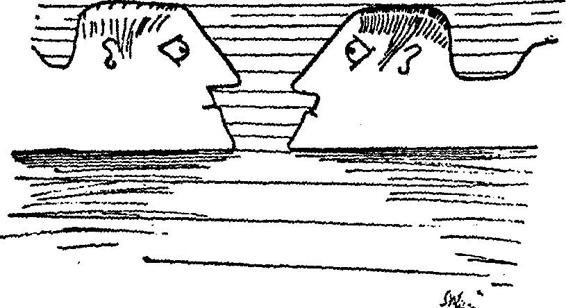

Genişletilmiş Baskıya Giriş
Ijon Tichy'nin metinlerinin bu yeni baskısını okurlarımıza sevinçle ve büyük bir heyecanla sunuyoruz; çünkü bu kitapta, şimdiye kadar bilinmeyen yolculukların (On Sekizinci, Yirminci ve Yirmi Birinci Yolculuk) ve yazarın kendi elinden çıkmış paha biçilmez çizimlerin yer almasının yanı sıra, bugüne dek Ticholoji uzmanlarının uykusuz geceler geçirmesine neden olan bazı esrarlı noktalar da açıklığa kavuşuyor.
Çizimlere gelince, yazar uzunca bir süre bunları vermek istememiş; kendi gözlemlerinden ya da koleksiyonundan devşirdiği yıldız ve gezegen modellerini yalnızca zevk için çizdiğini, üstelik bunları hep alelacele çiziktirdiği için sanatsal ya da bilimsel bir değer taşımadıklarını iddia etmiştir. Yine de, karalama bile olsalar -kaldı ki bütün uzmanlar bu fikirde değildir-çoğunlukla zor ve karanlık olan bu metinlerin okunması sırasında görsel açıdan yarar sağladıkları inkâr edilemez. Ekibimizin bu yeni baskıyı sunmaktan duyduğu memnuniyetin ilk nedeni budur. İkinci olarak, yeni yolculukların metinleri, insanoğlunun kendisine ve Dünya'ya dair sorduğu o köklü sorulara kesin yanıtlar arayan kimselere hatırı sayılır bir tatmin sağlamaktadır: Evreni gerçekte kim inşa etmiştir ve niçin başka türlü değil de böyle yapmıştır, ayrıca doğal evrimin ve genel tarihin, zekânın ortaya çıkışının, hayatın ve en az bunlar kadar önemli başka şeylerin sorumlusu kimdir? Ve ünlü yazarımızın, bu yaratıcı işte bizzat, belirleyici olmasa da büyük bir rol oynadığını öğrenmek gerçekten de hoş bir sürpriz değil mi? Bay Tichy'nin, el yazmalarının durduğu çekmeceyi herkesten sakınmasındaki alçak gönüllüğü çok iyi anlıyoruz, sonunda onu ikna etmiş olanların büyük bir sevinç duymuş olmasını da. Yıldız yolculuklarının numaralanmasındaki boşlukların nedeni de bu kitapta açığa çıkıyor. Okur bu baskıyı inceledikten sonra, sadece Bay Tichy'nin neden bir Birinci Yolculuk'u olmadığını değil, neden asla olmayacağını da görecektir ve bir parça kafa yormakla yirmi birinci yolculuğun aynı zamanda on dokuzuncusu olduğunu anlayacaktır. Doğrusu, bunu hemen görmek mümkün değildir, zira yazar söz konusu el yazmasındaki son otuz-kırk satırı silmiştir. Peki neden? Yine sınırsız alçak gönüllüğünden. Dudaklarımı mühürleyen gizlilik yeminini bozamam; yine de perdeyi biraz olsun aralamama izin verilmiştir. Bay Tichy, tarih öncesini ve tarihi iyileştirme teşebbüslerinin sonunun ne olacağını görerek, Zaman Enstitüsü Müdürü olmanın verdiği yetkiyle, bir şey yapmış ve bu şeyin sonucunda Zaman Araçları ve Yolculuğu Teorisi hiçbir zaman ortaya konamamıştır. Onun emriyle bu teorinin ortaya konamaması sonucunda, tarihi düzeltmeyi hedefleyen Uzakzaman Programı, Zaman Enstitüsü ve -ne yazık ki- enstitünün müdürü olan Bay Tichy de ortadan kalkmıştır. Bu kaybın neden olduğu acıyı kısmen de olsa hafifleten iki husus var: İlki, artık (hiç olmazsa) geçmişten kaynaklanacak hoş olmayan sürprizlerden korkmamıza gerek kalmaması; diğeri de trajik biçimde aramızdan ayrılan kişinin, yeniden canlanmamakla birlikte, şaşırtıcı bir biçimde hâlâ yaşıyor olması. Kabul etmek gerekir ki, bu durum kafa karıştırıcıdır; tatmin edici bir açıklama için okur uygun yerleri, yani Yirminci ve Yirmi Birinci Yolculukları incelemelidir.
Sözlerime son verirken, derneğimizde özel bir gelecek bilim bölümü açıldığını duyurmak isterim. Bu bölüm, çağımızın ruhuna uygun bir şekilde -kendi kendini gerçekleştiren öngörü adı verilen yöntemi kullanarak- Bay Tichy'nin ne bugüne dek yazdığı, ne de yazmak niyetinde olduğu yıldız günlüklerini ortaya koyacaktır.
PROF A. S. TARANTOGA
Betimlemeli, Karşılaştırmalı ve Öngörmeli Ticholoji,
Tichografi ve Tichonomik Enstitüleri Derneği adına
YEDİNCİ YOLCULUK
Bir pazartesi günüydü, nisanın ikisi. Betelgeuse yakınlarında yol alırken, bir bezelyeden daha büyük olmayan bir göktaşı dış kaplamayı deldi, motor regülatörünü ve dümenin bir kısmını parçaladı, bunun sonucunda roket manevra yeteneğini yitirdi. Uzay giysimi giydim, dışarı çıktım ve mekanizmayı onarmaya çalıştım, ama yedek dümeni -onu yanımda getirme akıllılığını göstermiştim- birisinin yardımı olmaksızın takmanın mümkün olmadığını gördüm. İmalatçılar roketi o kadar salakça tasarlamışlardı ki, bir kişinin ingiliz anahtarıyla cıvatanın kafasını sabit tutması, diğerinin de somunu sıkıştırması gerekiyordu. İlk başta bunun farkına varmadım ve ayağımla ingiliz anahtarını tutmaya çalışarak, iki elimi de diğer ucunda somunu sıkıştırmak için kullanarak saatler harcadım. Fakat bir sonuç alamadım, üstelik öğle yemeğini de kaçırdım. En sonunda neredeyse başaracaktım ki, ingiliz anahtarı ayağımın altından fırladı ve uzaya uçup gitti. Böylece bir şey elde edememekle kalmayıp, değerli bir aletten oldum. Çaresiz bir şekilde, ingiliz anahtarının yıldızlı gökyüzüne karşı git gide küçülerek uçup gidişini izledim.
Bir süre sonra ingiliz anahtarı uzun bir elips çizerek geri geldi; artık roketin bir uydusu olmuştu, ama hiçbir zaman onu yakalayabileceğim kadar yaklaşmadı. İçeri girdim ve sade bir akşam yemeği yemek üzere oturdum, bir taraftan da kendimi bu aptalca durumdan en iyi nasıl kurtaracağımı düşünüyordum. Bu arada gemi dosdoğru uçmaya devam ediyor, hızı durmadan artıyordu, zira o lanet göktaşı motor regülatörümü de parçalamıştı. Gerçi yolumun üzerinde hiç göksel cisim yoktu, ama bu paldır küldür gidiş sonsuza kadar süremezdi. Bir süre öfkeme hâkim oldum, sonra bulaşıkları yıkamaya başladığımda, bu arada aşırı ısınan atom reaktörümün en leziz sığır filetomu mahvetmiş olduğunu fark ettim (onu pazar günü için buzdolabımda saklıyordum) ve bir an için her zamanki sakinliğimi kaybettim, ağza alınmadık küfürler edip birkaç tabak kırdım. Bu beni biraz yatıştırdı, ama sorunu halletmedi. Ayrıca, geminin dışına attığım sığır filetosu, boşlukta uzaklaşacak yerde, roketi bırakmak istemiyor gibiydi; roketin çevresinde ikinci bir yapay uydu halinde dönüyor ve her on bir dakika dört saniyede küçük bir güneş tutulması meydana getiriyordu. Sinirlerimi yatıştırmak için akşama kadar onun yörüngesini ve uçan ingiliz anahtarının meydana getirdiği yörünge sapmasını hesapladım. Gelecek altı milyon yıl boyunca geminin çevresinde dairesel bir yol çizen sığır filetosu ingiliz anahtarının önünde olacaktı, daha sonra arkadan gelip onu yakalayacak ve yeniden geçecekti. Sonunda bu hesaplamalarla yorgun düşerek yatağa gittim. Gece yarısı birisinin omzumu sarstığını hissettim. Gözlerimi açtığımda yatağın üzerine eğilmiş bir adam gördüm; yüzü tuhaf bir şekilde tanıdıktı, ama kim olabileceği hakkında en ufak bir fikrim yoktu.
"Ayağa kalk," dedi adam "ve kargaburunu al, dışarı çıkıp dümen cıvatalarını sıkıştıracağız..."
"Bir kere, tavrınız biraz kaba, üstelik daha birbirimizi tanımıyoruz bile," dedim. "İkinci olarak, sizin burada olmadığınızı kesinlikle biliyorum. Ben bu roketin içinde tek başımayım, iki yıldır da, Dünya'dan Koç takımyıldızına yolculuk ederken, tek başımaydım. Bu yüzden siz sadece bir rüyasınız, başka bir şey değil."
Buna rağmen adam beni sarsmaya ve hemen onunla gidip aletleri almam gerektiğini söylemeye devam etti.
"Bu aptalca bir şey," dedim, sinirlenmeye başlayarak, çünkü rüyadaki bu tartışma beni uyandırabilirdi ve tecrübelerime dayanarak tekrar uykuya dalınanın ne kadar zor olduğunu biliyordum. "Bana bakın, ben hiçbir yere gitmiyorum, bunun bir yararı olmaz. Rüyada sıkıştırılan bir cıvata gün ışığında durumu değiştiremez. Lütfen artık beni rahatsız etmeyi bırakın ve buharlaşarak ya da başka bir şekilde ortadan kaybolun, yoksa uyanabilirim."
"Ama sen uyanıksın, yemin ederim!" diye haykırdı inatçı hayal. "Beni tanımadın mı? Buraya bak!"
Ve bunu söylerken, sol yanağında yer alan çilek büyüklüğündeki iki siğili gösterdi. Elimde olmaksızın kendi yüzümü tuttum, çünkü evet, benim de iki siğilim vardı, tamı tamına aynı biçimde ve aynı yerde. Ansızın bu hayalin niçin bana tanıdığım birisini hatırlattığını anladım: Tıpatıp bana benziyordu.
"Tanrı aşkına, beni rahat bırak!" diye haykırdım, gözlerimi kapayarak, uyanmamaya çalışıyordum. "Eğer sen bensen, iyi o halde, aramızda resmiyete gerek yok, ama bu sadece senin var olmadığını ispat eder!"
Bunları dedikten sonra öbür yanıma döndüm ve yatak örtülerini başıma çektim. Adamın "çok saçma" gibisinden bir şeyler söylediğini duyabiliyordum; en sonunda ben yanıt vermeyince bağırdı: "Buna pişman olacaksın, taş kafa! Bunun bir rüya olmadığını anlayacaksın, ama çok geç olacak!"
Bense yerimden kımıldamadım. Sabahleyin gözlerimi açınca hemen geceleyin başıma gelen o tuhaf olayı hatırladım. Yatakta oturarak, insan zihninin ne kadar tuhaf oyunlar oynayabildiğini düşündüm: Zira burada, gemide, tek bir hemcinsim bile yokken ve çok acil bir durumla karşılaşmışken, o fantezi denebilecek rüyada kendimi, duruma çare olmak için -adeta- ikiye ayırmıştım.
Kahvaltıdan sonra roketin geceleyin daha da hızlanmış olduğunu keşfettim ve geminin kütüphanesini gözden geçirerek, bu beladan kurtulmama yardımcı olacak bilimsel kitapları inceledim. Ama tek bir şey bile bulamadım. Ben de yıldız haritamı masanın üzerine yaydım, yakındaki Betelgeuse'nin ışığında -bu ışık yörüngedeki sığır filetosu yüzünden sık sık kararıyordu-yakınlarda yardımıma gelebilecek herhangi bir kozmik uygarlık var mı diye bulunduğum yeri inceledim. Ne yazık ki burası tam bir yıldız çölüydü, bütün gemiler çok tehlikeli bir bölge olduğu için buradan uzak duruyordu, çünkü burada çekimsel girdaplar vardı, korkunç oldukları kadar esrarlıydılar; tam yüz kırk yedi tane girdap vardı, bunların varlık nedenini açıklayan altı astrofizik teorisi vardı, her biri farklı bir şey söylüyordu.
Uzay gemiciliği almanağında bu girdaplar konusunda uyarılar vardı, zira bir girdabın içinden -özellikle de yüksek bir hızla- geçmenin kestirilemeyecek bazı izafî etkileri olabilirdi.
Ama yapabileceğim pek bir şey yoktu. Hesaplarıma göre ilk girdabın kenarına saat on bir sularında değecektim, bu yüzden öğle yemeğini aceleyle hazırladım, tehlikeyi boş mideyle karşılamak istemiyordum. Son tabağı kurulamayı henüz bitirmiştim ki, roket her yöne doğru sallanıp sarsılmaya başladı, sonunda sıkıca bağlanmamış bütün nesneler hızla uçup duvardan duvara çarpmaya başladı. Zorlukla koltuğa tırmandım ve kendimi bağladıktan sonra, gemi git gide artan bir şiddetle sallanırken, kabinin diğer tarafında soluk, leylak rengi bir çeşit duman oluştuğunu fark ettim; dumanın ortasında, lavabo ile ocağın arasında, önlük takmış ve tavaya çırpılmış yumurta döken bulanık bir insan şekli vardı. Şekil bana ilgiyle, ama şaşkınlık göstermeden baktı; sonra titreyerek parıldadı ve ortadan kayboldu. Gözlerimi ovuşturdum. Tek başıma olduğum besbelliydi, bu yüzden görüntüyü anlık bir hayal olarak yorumladım.
Koltukta oturmaya devam ederken -daha doğrusu onunla birlikte sıçrarken- ansızın, baş döndürücü bir aydınlanmayla, anladım ki bu hiç de halüsinasyon değildi. Genel İzafiyet Teorisi'nin kalın bir cildi koltuğumun yanından hızla geçti ve onu tutmaya çalıştım, sonunda dördüncü geçişinde onu yakaladım. O koşullar altında ağır cildin sayfalarını çevirmek kolay değildi - korkunç güçler gemiyi bir oraya bir buraya savuruyor, gemi sarhoş gibi yalpalıyordu; ama sonunda doğru bölümü buldum. "Zaman döngüsü"nün meydana gelmesinden, yani çok güçlü çekimsel alanların olduğu yerde zamanın akış yönünün bükülmesinden bahsediyordu; bu fenomen bazı durumlarda zamanın tamamen tersine dönmesine ve "şimdiki zamanın ikilenmesine" yol açıyordu. O an içine girdiğim girdap çok güçlü değildi. Eğer geminin başını, az da olsa, Samanyolu Kutbu'na doğru çevirebilirsem, Pinckenbachii çekim girdabıyla kesişeceğini biliyordum; orada ikilenme, hatta üçlenme bir defadan fazla gözlenmişti.
Gerçi kontroller çalışmıyordu, ama makine odasına gidip aygıtlarla o kadar uzun süre uğraştım ki, roketin Samanyolu Kutbu'na doğru hafifçe dönmesini sağlayabildim. Bunu yapmak saatler aldı. Elde ettiğim sonuçlar beklentilerimin çok ötesindeydi. Gemi gece yarısında girdabın ortasına düştü, kirişleri sarsılıp inildedi, öyle ki dayanamayacağından korkmaya başladım; ama o çetin sınavdan sapasağlam bir halde çıktı ve bir kez daha kozmik sessizliğin cansız kollarıyla sarıldı; bunun üzerine makine odasından çıktığımda, kendimi yatakta derin bir uykuya dalmış halde gördüm. Bunun geçen gecenin, yani pazartesi gecesinin Ijon'u olduğunu hemen anladım. Bu eşsiz denebilecek olayın felsefî yanı üzerinde düşünmeden, koştum ve uyuyan kişinin omzunu sarstım, ayağa kalkması için ona bağırdım, zira bu pazartesi varlığının benim salımda ne kadar süre varlığını koruyacağı hakkında bir fikrim yoktu, bu yüzden hemen birlikte dışarı çıkmamız ve dümeni elimizden geldiğince çabuk bir şekilde onarmamız şarttı.
Ne var ki, uyuyan kişi sadece tek gözünü açtı ve bana sadece kaba olmakla kalmayıp, aynı zamanda var olmadığımı da söyledi, rüyasının bir parçasıydım, o kadar. Onu boş yere sarstım, sabrım tükendiğinde onu yataktan zorla çıkarmaya bile kalkıştım. Adam yerinden kımıldamadı, inatla bunun sadece bir rüya olduğunu tekrarlıyordu; küfretmeye başladım, ama o mantıklı bir şekilde rüyalarda sıkıştırılan cıvataların gün ışığında dümenleri yerinde tutamayacağını söyledi. Ona yeminle hata ettiğini söyledim, kâh yalvardım, kâh küfrettim, ama bir yararı olmadı - siğiller bile onu ikna etmedi. Adam bana sırtını dönerek horlamaya başladı.
Düşüncelerimi toplamak ve durumu kavramak için koltuğa oturdum. Bu durumu iki defa yaşamıştım: Önce uyuyan kişi olarak pazartesi günü, sonra da onu uyandırmaya çalışan -ve başaramayan- kişi olarak salı günü. Pazartesi Ijon'u ikilenmenin gerçekliğine inanmamıştı, ama salı Ijon'u bunun gerçek olduğunu biliyordu. İşte bu mükemmel bir zaman döngüsüydü. O halde dümeni onarmak için ne yapmak gerekiyordu? Pazartesi Ijon'u uyumaya devam ettiğinden -o gece sabaha kadar derin bir uyku çektiğimi hatırladım- onu kaldırmak için daha fazla uğraşmanın yararsız olduğunu gördüm. Harita başka büyük çekimsel girdaplara gireceğimizi gösteriyordu, o halde birkaç gün içinde şimdiki zamanın ikileneceğini bekleyebilirdim. Kendime bir mektup yazıp onu yastığa iğnelemeye karar verdim, böylece pazartesi Ijon'u, uyandığı vakit, gördüğünün bir rüya olmadığını anlayacaktı.
Ne var ki, tam kalem ve kâğıda masaya oturmuştum ki, makinelerde bir şey tıngırdamaya başladı; hemen oraya koştum ve şafak sökene kadar, ısınmış atom reaktörünün üzerine su döktüm, bu arada pazartesi Ijon'u derin bir uykudaydı, arada sırada dudaklarını yalıyordu ki bu da beni fena halde öfkelendiriyordu. Karnını aç ve gözlerim kızarmış bir halde -çünkü hiç uyumamıştım- kahvaltı hazırlamaya koyuldum ve tam tabakları silerken roket bir sonraki çekimsel girdaba düştü. Koltuğa bağlanmış pazartesi Ijon'unun, şaşkınlıktan dili tutulmuş bir halde bana baktığını gördüm, o sırada ben, salı Ijon'u, omlet yapıyordum. Sonra bir yalpa yüzünden dengemi kaybettim, her şey karardı ve yere düştüm. Kendime geldiğim zaman yerde, kırılmış porselen parçaları arasındaydım; yüzümün yanında, tepemde duran bir adamın ayakkabıları vardı.
"Ayağa kalk," dedi adam, beni kaldırarak. "İyi misin?"
"Sanırım," dedim, ellerimi yerden kaldırmamıştım, zira başını hâlâ dönüyordu. "Sen haftanın hangi günündensin?"
"Çarşamba," dedi adam. "Gel hadi, fırsatımız varken şu dümeni onaralım!"
"Peki ama pazartesi Ijon'u nerede?" diye sordum.
"Gitti. Bunun anlamı, sanırım, o sensin."
"Nasıl olur?"
"Ee, pazartesi gecesi pazartesi Ijon'u olan kişi salı sabahı salı Ijon'u oldu, vesaire." "Anlamıyorum."
"Zararı yok - yakında anlarsın. Acele et, vakit kaybediyoruz!"
"Dur bir dakika," dedim, yerde kalarak. "Bugün salı. Şimdi eğer sen çarşamba Ijon'u isen ve eğer çarşamba günü dümen hâlâ onarılmamış ise, bu demektir ki, bir şey bizim onu onarmamıza engel olacak, zira aksi halde sen, çarşamba günü, benden şimdi, salı günü, onu onarmak için yardım istemezdin. O halde dışarı çıkma riskine atılmazsak, bizim için daha hayırlı olmaz mı?"
"Saçma!" diye bağırdı adam. "Bak, ben çarşamba Ijon'uyum, sen salı Ijon'usun, rokete gelince, ee, sanırım onun varlığı parçalı, yani bazı yerleri salı, bazı yerleri çarşamba ve belki orada burada bir parça perşembe bile var. Zaman o girdaplardan geçerken tam anlamıyla karman çorman oldu, ama bunun derdi niçin bize düşsün, birlikte olduğumuz vakit iki kişiyiz ve dümeni onarmak için bir şansımız var!"
"Hayır, yanlışın var!" dedim. "Eğer çarşamba günü -ki sen oradasın, bütün salı gününü yaşamışsın, böylece şimdi salı günü senin arkanda kalmış- eğer çarşamba günü -tekrar ediyorum- dümen onarılmamışsa, o halde salı günü onarılmadığı sonucunu çıkarabiliriz, zira şimdi salı ve eğer hemen gidip dümeni onarırsak, bu hemen senin dünün olacak ve şimdi tamir edilecek bir şey olmayacak. Sonuç olarak. .. " _ .
"Sonuç olarak sen katır gibi inatçısın!" diye homurdandı adam. "Buna pişman olacaksın! Tek tesellim senin de, tıpkı benim gibi, kendi kalın kafalılığın yüzünden deliye döneceğin - kendin çarşambaya geldiğin vakit!!"
"Ah, bekle," diye haykırdım, "demek istiyorsun ki, çarşamba günü ben sen olacağım ve salı Ijon'unu ikna etmeye çalışacağım, tıpkı senin şimdi yaptığın gibi, sadece her şey tersine dönecek, başka bir deyişle sen ben olacaksın, ben de sen, öyle mi? Ama şüphesiz! Zaman döngüsü bu demek! Bekle, geliyorum, evet, şimdi anlaşıldı... "
Ne var ki, yerden kalkamadan, yeni bir girdaba daldık ve korkunç hız bizi tavana yapıştırdı. Salıdan çarşambaya giden o gece boyunca, o feci sarsılma bir saniye olsun dinmedi. Sonra, ortalık biraz yatışır gibi olunca, Genel İzafiyet Teorisi kitabı uçarak kabinin bir köşesinden diğerine geldi ve öyle bir şiddetle alnıma çarptı ki, bayıldım. Gözlerimi açtığımda, kırık tabaklar ve aralarında yayılmış yatan bir adam gördüm. Hemen ayağa fırladım ve onu kaldırırken bağırdım:
"Ayağa kalk! İyi misin?"
"Sanırım," dedi adam, gözlerini kırpıştırarak. "Sen haftanın hangi günündensin?"
"Çarşamba," dedim. "Gel hadi, fırsatımız varken, o dümeni onaralım."
"Peki, ama pazartesi Ijon'u nerede?" diye sordu, oturarak. Bir gözü morarmıştı.
"Gitti," dedim, "Bunun anlamı, o sensin." "Nasıl olur?"
"Ee, pazartesi gecesi pazartesi Ijon'u olan kişi salı sabahı salı Ijon'u oldu, vesaire." "Anlamıyorum."
"Zararı yok - yakında anlarsın. Acele et, vakit kaybediyoruz!"
Bunu söylerken, bir taraftan da aletleri arıyordum.
"Dur bir dakika," dedi adam, ağır ağır konuşarak. Yerinden bir milim bile kımıldamamıştı. "Bugün salı. Şimdi eğer sen çarşamba Ijon'u isen ve eğer çarşamba günü dümen hâlâ onarılmamış ise, bu demektir ki, bir şey bizim onu onarmamıza engel olacak, zira aksi halde sen, çarşamba günü, benden salı günü, yani şimdi, onu onarmak için yardım istemezdin. O halde dışarı çıkma riskine atılmazsak, bizim için daha hayırlı olmaz mı?"
"Saçma!" diye haykırdım, öfkelenerek. "Bak, ben çarşamba Ijon'uyum, sen salı Ijon'usun..."
Böylece rolleri değiştirerek tartıştık, adam beni gerçekten de öfkeden delirtti, çünkü ısrarla dümeni onarmakta bana yardımcı olmayı reddetti ve ona kalın kafalı ve katır gibi inatçı demem işe yaramadı. Sonunda onu ikna etmeyi başardığımda, bir sonraki çekimsel girdaba daldık Soğuk terler döküyordum, çünkü bu gidişle bu zaman döngüsü içinde dönüp duracağımızı, kendimizi sonsuza kadar tekrarlayacağımızı düşündüm, ama neyse ki bu olmadı. Hız, ayağa kalkabileceğim kadar düştüğünde, bir kere daha kabinde tek başımaydım. Göründüğü kadarıyla, salı gününde mevzilenmiş varlık, o ana kadar lavabonun yakınında yer almış, ancak geri dönüşü olmayan geçmişin bir parçası haline gelerek yok olmuştu. Haritanın yanına koştum, niyetim roketi gönderebileceğim başka bir girdap bulmaktı, böylece zamanın yeniden çarpılmasını temin edecek ve bu şekilde bir yardımcı bulacaktım.
Gerçekten de bir girdap vardı, üstelik oldukça umut vericiydi; makineleri büyük güçlükle çalıştırarak roketi tam onun merkezine gönderdim. Aslında haritaya göre bu girdabın şekli çok değişikti - yan yana iki odağı vardı. Ama artık bu anormallikle uğraşamayacak kadar umutsuz bir durumdaydım.
Makine odasında saatlerce uğraştıktan sonra ellerim kirlenmişti, ben de onları yıkamaya gittim, girdaba girmemize daha çok vakit vardı. Banyo kilitliydi. İçeriden gargara yapan birinin sesi geliyordu.
"Kim var orada?!" diye bağırdım, şaşırarak.
"Ben," dedi bir ses.
"Ben de kim?!"
"Ijon Tichy."
"Hangi günden?"
"Cuma. Ne istiyorsun?"
"Ellerimi yıkamak istiyorum..." dedim, mekanik bir şekilde, derin düşünceler içindeydim: O akşam çarşambaydı ve adam cuma gününden geliyordu, o halde geminin içine düşeceği çekim girdabı zamanı cumadan çarşambaya kadar bükecekti, ama daha sonra girdabın içinde neler olacağını kestiremiyordum. Perşembenin nerede olduğu özellikle merak uyandıran bir soruydu. Bu arada cuma Ijon'u hâlâ banyoya girmeme izin vermemişti, ısrarla kapıyı vurduğum halde, işi yavaştan alıyordu.
"Gargara yapmayı bırak!" diye kükredim, sabrım taşarak. "Her saniye değerli - hemen dışarıya çık, dümeni onarmamız gerek!"
"Bunu yapmak için bana ihtiyacın yok," dedi adam, soğukkanlı bir şekilde, kapının arkasından. "Perşembe Ijon'unun oralarda bir yerlerde olması gerek, onunla git..."
"Perşembe Ijon'u mu? Bu mümkün değil..."
"Mümkün olup olmadığını benim bilmem gerek, şu anda cuma olduğumu ve bu şekilde senin çarşambam ve onun perşembesini yaşadığımı düşünürsen..."
Başımın döndüğünü hissederek kapıdan hızla ayrıldım, çünkü evet, kabinin içinden bazı sesler geliyordu: Bir adam vardı, yatağın altından alet çantasını çıkarıyordu.
"Sen perşembe Ijon'u musun?" diye bağırdım, hızla odaya girerek.
"Doğru," dedi adam. "Gel, bana yardım et. .. "
"Bu sefer dümeni onarabilecek miyiz?" diye sordum, ağır çantayı birlikte çekerken.
"Bilmiyorum, perşembe günü onarılmamıştı, cuma Ijon'una sor... "
Bu benim aklıma gelmemişti! Hemen banyo kapısına koştum. "Hey oradaki, cuma Ijon'u! Dümen onarıldı mı?" "Cuma günü onarılmadı," diye yanıtladı adam. "Niçin?"
"İşte bunun için," dedi adam kapıyı açarak; kafasına bir havlu sarılmıştı, bir bıçağın yassı yanını alnına bastırıyor ve bu şekilde yumurta büyüklüğünde bir şişi indirmeye çalışıyordu. Bu arada perşembe Ijon'u aletlerle yaklaşıp yanımda durdu, sakin bir şekilde alnı şişmiş Ijon'u dikkatle inceledi, o ise serbest eliyle rafın üzerine maden suyu sifonunu geri koyuyordu. Demek ki adamın gargarası sandığım şey onun gurultusuydu.
"Buna yol açan neydi?" diye sordum, yakınlık göstererek.
"Ne değil, kim," diye yanıtladı adam. "Pazar Ijon'u."
"Pazar Ijon'u mu? Ama niçin ... bu imkânsız!" diye haykırdım.
"Anlatması uzun sürer... " -. "Önemi yok! Çabuk, dışarıya çıkalım, ucu ucuna yetişebiliriz!" dedi perşembe Ijon'u, ben olan Ijon'a dönerek.
"Ama artık roket her an girdaba düşebilir," dedim. "Şok bizi uzaya fırlatabilir, bu da sonumuz demek olur..."
"Kafanı kullan, budala," diye çıkıştı perşembe Ijon'u. Eğer cuma Ijon'u sağ ise, bize bir şey olmaz. Bugün sadece perşembe." "Çarşamba," diye itiraz ettim.
"Fark etmez, her iki durumda da cuma günü ben sağ olacağım, sen de öyle."
"Evet, ama gerçekte iki biz yokuz, sadece öyleymiş gibi görünüyor," diye fikir yürüttüm, "aslında bir tek Ijon var, sadece haftanın çeşitli günlerinden... "
"Tamam, tamam, şimdi dış kapağı aç..."
Ne var ki, ikimiz için sadece tek bir uzay giysisi vardı. Bu yüzden roketten aynı anda ayrılamıyorduk, böylece dümeni onarma planımız tamamen suya düşmüştü.
"Kahretsin!" diye bağırdım, öfkeyle alet çantasını yere fırlatarak. "Yapmam gereken şey, uzay giysisini en baştan giymek ve onu üzerimden çıkarmamaktı. Bunu düşünemedim - ama senin, perşembe Ijon'u olarak, senin hatırlaman gerekirdi!"
"Uzay giysim vardı, ama cuma Ijon'u onu benden aldı," dedi adam.
"Ne zaman? Niçin?"
"Anlatmaya değmez," dedi adam omuzlarını silkerek ve geri dönüp kabine girdi. Cuma Ijon'u orada değildi; banyoya baktım, orası da boştu.
"Cuma Ijon'u nerede?" dedim, odaya geri dönerek. Perşembe Ijon'u dikkatli bir şekilde bir yumurtayı bir bıçakla çatlattı ve içindekini cızırdayan yağa döktü.
"Cumartesinin yakınlarında bir yerde olmalı," dedi adam, ilgisizce, yumurtayı hızla karıştırarak.
"Özür dilerim, ama sen çarşamba günü zaten yedin," diye itiraz ettim, "ikinci defa bir çarşamba yemeği yiyebileceğini kim söyledi?"
"Bu yiyecekler senin olduğu kadar benim de sayılır," dedi adam sakin bir şekilde, yumurtanın kızarmış kenarını kaldırarak. "Ben senim, sen de bensin, bu yüzden fark .etmez..."
"Safsata diye buna denir! Dur, o tereyağı çok fazla! Kaçık mısın? Bu kadar çok insana yetecek kadar yiyeceğim yok benim!"
Tava adamın elinden kaydı ve ben gidip bir duvara çarptım:
Yeni bir girdaba düşmüştük Gemi bir kez daha ateşli bir nöbete girmiş gibi sarsıldı, ama benim tek düşüncem, uzay giysisinin asılı durduğu koridora gidip onu üstüme geçirmekti. Böylece (diye düşündüm) çarşamba perşembe olunca, ben perşembe Ijon'u olarak uzay giysisini giyiyor olacaktım ve eğer onu sırtımdan bir saniye bile çıkartmazsam (bunu yapmamaya sonuna kadar kararlıydım) o zaman hiç şüphe yok ki, onu cuma günü de giyiyor olacaktım. Böylece perşembe Ijon'u ile cuma Ijon'u uzay giysisi giymiş olacaktı ve aynı şimdide bir araya geldiğimizde, sonunda o baş belası dümeni onarmak mümkün olacaktı. Çekimin git gide artan baskısı başımı döndürdü ve gözlerimi açtığımda, perşembe Ijon'unun sağında yattığını fark ettim, oysa birkaç dakika önce onun solundaydım. Uzay giysisi için plan yapmak benim açımdan kolay olmuştu, ama onu uygulamaya koymak daha zordu, zira artan çekim yüzünden kımıldamak mümkün değildi. Çekim bir parça zayıfladığında, yerde, koridora açılan kapı yönünde, yavaş yavaş sürünmeye başladım. Bu arada perşembe Ijon'unun da karnının üzerinde sürünerek koridora gitmek üzere kapıya yöneldiğini fark ettim. En sonunda, bir saat kadar sonra, girdap en yüksek şiddetine ulaştığı sırada, ikimiz de yere yapışmış bir şekilde, eşikte karşılaştık. O vakit tokmağa ulaşmak için niye kendimi sıkıntıya sokayım, diye düşündüm. Bu işi perşembe Ijon'u yapabilirdi. Fakat aynı zamanda hatırlamaya başladığım bazı şeylere göre, o anda perşembe Ijon'u o değil, bendim.
"Sen haftanın hangi günündesin?" diye sordum, emin olmak için. Çenem yere yapışmış bir halde gözlerinin içine baktım. Adam ağzını güçlükle açtı.
"Per-şem-be-yim," diye inledi. İşte bu tuhaftı. Her şeye rağmen hâlâ çarşamba Ijon'u olmam mümkün müydü? Yakın geçmişle ilgili bütün hatırladıklarımı gözden geçirince, bunun söz konusu olmadığına karar verdim. O halde adam cuma Ijon'u olmalıydı. Zira eğer daha önce benim bir gün önceki durumum idiyse, şimdi bir gün sonraki halim olmalıydı. Adamın kapıyı açmasını bekledim, ama görünüşe göre o da benden aynı şeyi bekliyordu. Artık çekim epeyce azalmıştı, bu

nedenle ayağa kalkıp koridora koştum. Tam uzay giysisini yakaladığım sırada, adam bana çelme taktı ve giysiyi elimden çekti, ben de yüzükoyun yere düştüm.
“Seni gidi köpek!” diye haykırdım. “Kendi benliğine oyun oynamak ha – bu gerçekten de alçakça bir şey!”
Adam bana aldırmadı ve sakin bir şekilde uzay giysisinin içine girdi. Utanmazlığı rahatsız ediciydi. Ansızın ne olduğu anlaşılmayan bir güç onu giysiden dışarı fırlattı - sonradan anlaşıldığına göre, birisi daha önceden giysinin içine girmişti. Bir an bocaladım, artık kim kimdir bilmez olmuştum.
"Sen, çarşamba!" diye bağırdı giysinin içindeki. "Perşembeyi geri tut, bana yardım et!"
Zira perşembe Ijon'u gerçekten de giysiyi adamın üzerinden çekip çıkarmaya çalışıyordu.
"Bırak! Ne yapmaya çalışıyorsun? Anlamıyor musun, onu giymesi gereken kişi benim, sen değil?!" diye bağırdı öteki.
"Nedenmiş, peki?"
"Aptal, ben cumartesiye senden daha yakınım da ondan ve cumartesi günü giysisi olan iki kişi olacak!"
"Ama bu saçma," dedim, onların tartışmasına katılarak, "en iyi durumda sen cumartesi günü giysinin içinde tek başına olacaksın, tam bir budala gibi ve hiçbir şey yapamayacaksın. Bırak giysiyi ben alayım: Eğer onu şimdi giyersem, o zaman sen onu, Cuma Ijon'u olarak, cuma günü giyiyor olacaksın ve ben de cumartesi günü, cumartesi Ijon'u olarak giyeceğim ve böylece gördüğün gibi iki kişi olacağız, iki de giysi olacak... Hadi, perşembe, bana yardım et!!"
"Bekle," diye itiraz etti Cuma Ijon'u, zorla uzay giysisini sırtından çekip çıkardığım vakit. "Öncelikle burada 'perşembe' diyeceğin biri yok, çünkü gece yarısı geçti ve artık perşembe Ijon'u sensin; ikinci olarak da, uzay giysisinin içinde benim kalmam daha iyi olacak. Uzay giysisinin sana bir yararı olmayacak."
"Niçin olmasın? Eğer bugün onu giyersem, yarın da giymiş olacağım."
"Daha sonra anlayacaksın... ne de olsa ben perşembe günü sendim ve benim perşembem geçti, dolayısıyla bunu bilmem gerek. .. "
"Konuştuğun yeter. Onu hemen, şu anda bırak!" diye hırladım. Ama adam giysiyi elimden kapıp kaçmaya başladı, ben de onu kovaladım, önce makine odasında, sonra kabinde. Artık nedense iki kişi kalmıştık Ansızın perşembe Ijon'unun, kapıda aletlerle durduğumuz sırada bana, cuma Ijon'unun uzay giysisini elinden kaptığım niçin söylediğini anladım: Zira bu arada ben perşembe ljon'u olmuştum ve artık cuma ljon'u onu gerçekten alıyordu. Ama bu kadar çabuk pes etmeye niyetim yoktu. Hele bekle, dedim kendi kendime, hesabını göreceğim; koridora koştum, oradan makine odasına, orada daha önce -kovalama sırasında- yerde ağır bir boru olduğunu fark etmiştim, atom reaktörünü körüklemeye yarıyordu; onu yerden aldım ve -böylece silahlanmış olarak- kabine koştum. Öteki Ijon çoktan uzay giysisinin içine girmişti, başlık dışında her şeyi takmıştı.
"Giysiden çık!" diye bağırdım, borumu tehdit edercesine tutarak.
"Olmaz."
"Çık, dedim!!"
Sonra acaba ona vursam mı, vurmasam mı diye tereddüt ettim. Biraz şaşırtıcı bir durumdu, çünkü ne adamın gözü morarmıştı, ne de banyoda bulduğum diğer Cuma Ijon'u gibi kafasında bir şişlik vardı, ama birdenbire böyle olması gerektiğini kavradım. O cuma Ijon'u artık cumartesi Ijon'u olmuştu ve belki pazar günü civarında bir yerlerdeydi, diğer taraftan uzay giysisinin içindeki bu cuma ljon'u yakın zaman önce perşembe Ijon'uydu, gece yarısı ben kendim aynı perşembe Ijon'una dönüşmüştüm. Böylece ben, zaman döngüsünün eğrisi boyunca, dayak yemeden önceki cuma Ijon'unun dayak yedikten sonraki cuma Ijon'una dönüşeceği o yere doğru ilerliyordum. Yine de adam o vakit bunu yapan kişinin pazar Ijon'u olduğunu söylemişti ve henüz ondan bir iz yoktu. Derken ansızın aklıma bir fikir geldi.
"O giysiden çık," diye homurdandım.
"Uzak dur, perşembe," diye bağırdı.
"Ben perşembe değilim, ben PAZAR IJON'UYUM!" diye haykırdım ve vurmak için yaklaştım. Adam bana tekme atmaya çalıştı, ama uzay giysisinin botları çok ağırdı ve daha o bacağını kaldıramadan, kafasına boruyu indirdim. Şüphesiz çok hızlı değil, zira olup biten her şey hakkında artık yeterince bilgi sahibi olmuştum ve sonunda perşembe Ijon'undan Cuma Ijon'una dönüştüğüm vakit, sopayı kafasına yiyecek kişinin kendim olacağını biliyordum, kafatasımı kırmaya meraklı değildim. Cuma Ijon'u inleyerek yere düştü, kafasını tutuyordu, bense uzay giysisini gaddarca onun üzerinden çekip aldım. Adam sallantılı adımlarla "Pamuk nerede ... maden suyu nerede," diye söylenerek banyoya giderken, ben hemen uğruna mücadele ettiğimiz giysiyi giymeye başladım, ama sonra yatağın altından çıkan bir insan ayağı fark ettim. Yatağın altında bir adam yatıyordu; çiğneme sesini gizlemeye çalışarak, yağmurlu bir yıldız günü için bavulda saklamış olduğum sütlü çikolatanın son parçasını aceleyle yutuyordu. Piç kurusu o kadar acele ediyordu ki, çikolatayla birlikte yaldızlı kâğıdı da yemişti, kalan parçalar dudaklarında parlıyordu.
"O çikolatayı bırak," diye haykırdım, adamın ayağına yapışarak. "Hem sen de kimsin? Perşembe Ijon'u mu?..." diye ekledim daha alçak bir sesle, zira aniden şüpheye kapılmıştım, çünkü artık cuma Ijon'u olabileceğim ve çok geçmeden, daha önce o kişiye yaptığım şeye maruz kalacağım aklıma gelmişti.
"Pazar Ijon'u," diye mırıldandı adam, ağzı dolu bir şekilde. Elim ayağım kesildi. Adam ya yalan söylüyordu -o zaman endişe etmeye gerek yoktu- ya da gerçeği söylüyordu - ki öyleyse, kafama bir şey yiyeceğime hiç şüphe yoktu, çünkü cuma Ijon'una vuran kişi pazar Ijon'uydu, bunu bana cuma Ijon'u olay meydana gelmeden önce söylemişti ve daha sonra ben, pazar Ijon'u rolüne girerek, ona boruyla vurmuştum. Ama diğer taraftan, dedim kendi kendime, adam yalan söylüyor olsa bile ve pazar Ijon'u olmasa da, hâlâ benden sonra olması mümkündü, eğer benden sonra ise, benim yaptığım her şeyi hatırlıyordu, bu yüzden cuma Ijon'una yalan söylediğimi biliyordu ve beni de aynı şekilde kandırabilirdi, çünkü benim için o anda aklıma gelmiş olan bir manevra, onun için -şu anda-bir hatıraydı - kolaylıkla yararlanacağı bir hatıra. Ben ne yapacağımı bilmezken, adam çikolatanın geri kalan kısmını yedi ve yatağın altından sürünerek dışarı çıktı.
"Eğer sen pazar Ijon'u isen, uzay giysin nerede?!" diye bağırdım, aklıma yeni bir fikir gelmişti.
"Şimdi onu alacağım," dedi adam sakin bir şekilde, sonra elindeki boruyu fark ettim... Daha sonra gördüğüm şey parlak bir şimşekti, birkaç düzine supernovanın aynı anda patlaması gibiydi; sonra bayıldım. Kendime geldiğimde, banyonun zemininde oturuyordum; birisi kapıya vuruyordu. Çürüklerim ve şişiklerimle ilgilenmeye başladım, ama adam durmadan vuruyordu; kapıdaki kişinin çarşamba Ijon'u olduğu ortaya çıktı. Bir müddet sonra adama yarılmış kafamı gösterdim, o ise perşembe Ijon'uyla aletleri almak için gitti, daha sonra bir sürü koşuşturma oldu ve uzay giysisi çekip çıkartıldı, bir şekilde sağ kalmayı başardım ve cumartesi sabahı sürünerek yatağın altına girdim, amacım bavulun içinde hiç çikolata kalmış mı diye bakmaktı. Gömleklerin altında bulduğum son parçayı yerken birisi ayağını çekmeye başladı; artık kim kimdir bilmiyordum, ama adamın kafasına bir tane indirdim, üzerindeki uzay giysisini çıkardım ve tam onu giyecektim ki, roket bir sonraki girdaba düştü.
Kendime geldiğimde, kabin insanla doluydu. Ortalık tıkış tıkıştı. Onların hepsinin ben olduğum ortaya çıktı, çeşitli günlerden, haftalardan, aylardan, hatta biri -adamın dediğine göre- gelecek yıldandı. Çürükleri ve morarmış gözleri olan birçok kişi vardı ve beş tanesi uzay giysisi giymişti. Ne var ki, adamlar hemen kapıdan dışarıya çıkıp hasarı onaracakları yerde, kavgaya, münakaşaya, ağız dalaşına ve fikir tartışmasına başladılar. Sorun kimin kime ne vakit vurduğuydu. Durum artık sabah ve akşam Ijon'larının ortaya çıkmasıyla daha karışık bir hal almıştı; işler böyle devam ederse, çok geçmeden dakikalara ve saniyelere de bölüneceğimden korkmaya başladım, üstelik oradaki Ijon'ların çoğu çılgın gibi yalan söylüyordu, bu yüzden perşembe, cuma ve çarşamba Ijon'larının -bunların hepsi de sırasıyla bendim- meydana getirdiği bir üçgen içinde geçen bütün bu olaylarda ben kime vurdum ve kim bana vurdu bugün bile hâlâ tam olarak anlamış değilim. izlenimim şu ki, cuma Ijon'una pazar Ijon'unuyum diye yalan söylemiş olduğum için, takvime göre yemem gerekenden bir darbe fazla yemiştim. Ama bu hoş olmayan anılar üzerinde daha fazla durmak istemiyorum; bütün bir hafta boyunca kendi kafasına vurmaktan başka bir iş yapmayan bir kimsenin gurur duymak için bir nedeni yoktur.
Bu arada münakaşalar devam ediyordu. Böylesi bir avarelik, değerli vaktin bu şekilde harcanması beni umutsuzluğa düşürüyordu; bu arada roket körlemesine ilerliyor, arada sırada başka bir çekimsel girdaba düşüyordu. Sonunda uzay giysili olanlar olmayanlarla dövüşmeye başladı. Bu kaosa biraz düzen vermeye çalıştım ve en sonunda, insanüstü gayretlerle, toplantıya benzer bir şey örgütlemeyi başardım; gelecek yıldan olan kişi -herkesten yaşlı olduğu için- alkışlarla başkan seçildi.
Daha sonra bir seçim komitesi, bir aday seçme komitesi ve yapılacak işler için bir komite seçtik ve gelecek aydan olan dört kişiye düzeni koruma görevini verdik. Ama bu arada bir negatif girdaptan geçtik, bu da sayımızı yarıya düşürdü, bu yüzden ilk oylamada yeterli sayıya ulaşamadık ve dümen onarımı için adaylara oy vermeden önce yönetmeliği değiştirmek zorunda kaldık. Harita başka girdapların yaklaştığını gösteriyordu ve bunlar o ana kadar yaptığımız her şeyi geçersizleştirdi: İlk başta seçilmiş adaylar ortadan kayboldu, sonra salı Ijon'u cuma Ijon'uyla birlikte ortaya çıktı, sonuncusunun başına bir havlu sarılmıştı ve utanç verici bir manzara yarattılar. Çok güçlü bir pozitif girdaptan geçtikten sonra, kabine ve koridora güçlükle sığabildik, kapıyı açmak da söz konusu değildi - artık yer kalmamıştı. Ama işin en kötü yanı şuydu: Bu zaman sapmalarının dalga genişliği artmaya başlamıştı, daha şimdiden birkaç tane kır saçlı Ijon ortaya çıkmıştı, hatta orada burada saçları kısa kesilmiş çocuklar bile gördüm, şüphesiz bunlar bendim - daha doğrusu, huzur dolu çocukluk günlerimin Ijonları'ydılar.
Hâlâ pazar Ijon'u muydum, yoksa pazartesi Ijon'u mu olmuştum, gerçekten hatırlamıyorum. Zaten fark etmezdi. Çocuklar kalabalıkta ezildikleri için ağlıyor ve annelerini istiyorlardı; başkan -gelecek yılın Tichy'si- ardı ardına küfürler yağdırıyordu, çünkü yanlışlıkla, çikolata aramak için boş yere yatağın altına girmiş olan çarşamba ljon'unun parmağına basmış, adam da onun bacağını ısırmıştı. Bu işin sonunun kötü olduğunu görüyordum, özellikle orada burada gri sakallılar ortaya çıkmaya başladıktan sonra. 142. ve 143. girdaplar arasında bir yoklama kâğıdı dolaştırdım, ama daha sonra çok kişinin yalan söylediği ortaya çıktı. Doğum tarihleri konusunda sahtekârlık yapmışlardı, nedenini Tanrı bilir. Belki içinde bulundukları ortam kafalarını karıştırmıştı. Gürültü ve karmaşa o kadar fazlaydı ki, insanın, avazı çıktığı kadar bağırmadıkça sesini duyurması mümkün değildi. Ama daha sonra geçmiş yılın Ijon'larından birinin aklına mükemmel görünen bir fikir geldi: Aramızdaki en yaşlı kişi hayat hikâyesini anlatacaktı, bu şekilde dümeni kimin onarması gerektiğini öğrenecektik. Ne de olsa en yaşlı Ijon'un geçmişinde, çeşitli aylar, günler ve yıllardan olan diğer herkesin hayatının yer alması gerekiyordu. Böylece bu iş için ak saçlı bir yaşlı beyefendiye başvurduk, adam hafifçe titreyerek bir köşede boş boş duruyordu. Kendisine sorulduğu vakit, uzun uzun çocuklarını ve torunlarını anlattı, sonra uzay yolculuklarına geçti, doksan küsur yıl sürmüş hayatı boyunca sayısız yolculuklara çıkmıştı. Yaşlı adam, o sıradaki yolculuk hakkında -bizi tek ilgilendireni oydu- damar sertliği ve aşırı heyecan yüzünden, hiçbir şey hatırlamıyordu; ama bunu itiraf etmeyecek kadar gururluydu ve çaktırmadan, inatla, lafı yüksek mevkilerdeki tanıdıklarına, madalyalarına ve torunlarına getiriyordu; sonunda hepimiz birden bağırıp adamı susturduk ve ona dilini tutmasını emrettik. Daha sonraki iki girdap sayımızı iyice azalttı. Üçüncüden sonra, oda ferahlamakla kalmamış, uzay giysili kişilerin hepsi de ortadan kaybolmuştu. Tek bir boş giysi kalmıştı; oylama sonucu onun koridora asılmasına karar verdik ve tartışmalarımıza döndük. Sonra, o değerli giysiyi elde etmek için başka bir kavga çıktı, sonra yeni bir girdap geldi ve ansızın gemi boşaldı. Ben yerde, tuhaf bir şekilde boşalmış kabinin içinde, kırık mobilyalar, kumaş parçaları ve yırtılmış kitaplar arasında, gözü şişmiş bir halde oturuyordum. Zemin oy pusulalarıyla kaplanmıştı. Haritaya göre artık çekimsel girdap bölgesinden çıkmıştım. Artık ikilenmeye güvenemezdim ve bu yüzden hasarı onarmam mümkün olmayacaktı, üzüntüden elim ayağım tutuldu. Bir saat sonra koridora baktım ve büyük bir hayretle uzay giysisinin yerinde olmadığını keşfettim. Ama sonra hayal meyal hatırladım -evet- o son girdaptan az önce iki küçük çocuk gizlice koridora çıkmıştı. İkisinin birden tek bir uzay giysisine girebilmeleri mümkün müydü? Aklıma gelen ani bir düşünceyle kontrol panosuna koştum. Dümen çalışıyordu! Öyleyse o küçük yumurcaklar, biz büyükler kendimizi sonu gelmez anlaşmazlıklara kaptırmışken, gerçekten de onu onarmışlardı. Birisinin kollarını giysinin yenlerine, diğerinin bacaklarına koymuş olduğunu gözümde canlandırdım; bu şekilde ingiliz anahtarlarıyla somunu ve cıvatayı, dümenin iki yanında çalışarak, aynı zamanda sıkıştırabilirlerdi. Boş giysiyi dış kapağın arkasındaki basınç odasında buldum. Onu, kutsal bir emanet gibi, roketin içine taşıdım; kalbim, bir zamanlar olmuş olduğum bu cesur çocuklar için sınırsız minnetle doluydu! En olağanüstü serüvenlerimden biri, işte böyle sonuçlanmıştı. Henüz iki çocukken göstermiş olduğum cesaret ve beceriklilik sayesinde hedefime sağ salim varmıştım.
Sonraları, bu olup bitenleri benim uydurduğum söylendi ve daha kötü kalpliler işi alkole karşı zaafım olduğunu ima etmeye kadar vardırdılar: Dünya'da bu zaafımı dikkatli bir şekilde saklıyormuşum, ama o uzun ve yalnız uzay yolculuklarında hiçbir sınırlama olmaksızın kendimi kaptırıyormuşum. Bu konuda başka hangi dedikoduların dolaştığını Tanrı bilir. Ama işte insanlar böyledir; burada anlattıklarım gibi tamamen gerçek olan bir şeye değil, en olmadık yalana seve seve kanarlar.
SEKİZİNCİ YOLCULUK
En sonunda olmuştu. Birleşmiş Gezegenler'in (BG) Dünya delegesiydim - daha doğrusu buna adaydım, gerçi bu da tam olarak doğru değil, zira Genel Kurul'un karara bağlayacağı şey benim değil, bütün insanlığın adaylığıydı.
Hayatımda hiç o kadar sinirli olmamıştım. Dilim şişmiş, ağzım kurumuştu ve yıldız otobüsünden inip yere serilmiş kırmızı halının üzerinde yürürken halı mı, yoksa dizlerim mi titriyordu, bilmiyordum. Hiç şüphesiz konuşmalar yapılacaktı; heyecandan tek bir söz edecek halde değildim, bu yüzden kromdan bir tezgâhı ve madenî para atmak için küçük delikleri olan iri ve parlak bir makine görür görmez, hemen bir para attım ve termos bardağımı musluğun altına koydum. Bu hareketim, insanlık diplomasisi tarihinde galaktik düzeydeki ilk gezegenler arası olaydı, çünkü gazoz makinesi sandığım şeyin, Rhohch delegasyonunun resmî kıyafetli başkan yardımcısı olduğunu anladım. Rastlantıya bakın ki, Rhohch'lar toplantıda bizim adaylığımızı desteklemeyi teklif eden taraftı, ama o sırada benim bundan haberim yoktu ve o yüksek makamdaki şahıs botlarımın üzerine tükürdüğünde bunu kötüye yordum, oysa bu onun selamlama bezlerinin hoş kokulu salgısından başka bir şey değilmiş. Bütün bunları, sevimli bir BG görevlisinin bana verdiği bilgi-çeviri tabletini yuttuktan sonra anladım. Tableti yutar yutmaz çevremdeki uyumsuz sesler gayet tutarlı sözlere, pelüş halının ucunda duran dikdörtgen şeklindeki alüminyum bowling kukaları bir şeref muhafızına dönüştü ve beni selamlayan Rhohch -o ana kadar çok iri bir çubuk krakere benziyordu- halinde hiçbir tuhaflık olmayan eski bir tanıdık gibi göründü. Ne var ki, sinirlerim yatışmamıştı. Küçük bir tekerlekli araç yanımıza yanaştı, özellikle benim gibi iki ayaklı yaratıklar için yapılmıştı; bana eşlik eden Rhohch içeriye güçlükle sığabildi ve hem sağıma, hem soluma oturarak şöyle dedi:
"Saygıdeğer Dünyalı, size bildirmek zorundayım ki protokolde küçük bir karışıklık oldu. Delegasyonumuzun başkanı -Dünya uzmanı olduğu için adaylığınızı desteklemeye en uygun kişi- ne yazık ki, dün gece başkente çağrıldı ve ben onun yerini almak durumundayım. Kurallar hakkında bilginiz var mı?"
"Hayır, ben... pek fırsat bulamadım," diye mırıldandım, koltuğa rahat bir şekilde yerleşmeye çalışıyordum ama pek başarılı olduğum söylenemezdi, zira araç yapılırken insan vücudunun ihtiyaçları tam olarak gözetilmemişti. Oturulacak yer daha çok derin bir çukura benziyordu, yaklaşık altmış santim derinliğindeydi ve araba sarsıldığında dizlerim alnıma değiyordu.
"Aldırmayın, hallederiz ..." dedi Rhohch, dikdörtgen şekiller verilmiş ve madeni parıltılar saçan dalgalı cüppesi -az önce gazoz makinesi sandığım şey- hafifçe hışırdarken, boğazını temizleyip konuşmasını sürdürdü:
"Şüphesiz halkınızın tarihi hakkında bilgi sahibiyim, zira bilgi sahibi olmak görevlerimden biridir. Gerçekten de ne kadar müthiş bir şey, bu insanlık! Delegasyonumuz, bütün hak ve ayrıcalıklarla birlikte topluluğun resmi üyesi olmanızı teklif edecek (seksen üç nolu gündem maddesi) ... kimlik kâğıtlarınızı kaybetmiş olamazsınız, değil mi?!" Bunu o kadar ani bir şekilde sordu ki, ayağa fırladım ve başımı sertçe hayır anlamında salladım. Sözünü ettiği tirşe rulosunu, terden ıslanmış sağ elimde, sımsıkı tutuyordum.
"Güzel," dedi Rhohch. "O halde, evet, sizin büyük başarılarınızı anlatan bir konuşma yapacağım, Yıldız Federasyonu'nda hak ettiğiniz yeri almanızı bu başarılar sağlayacak. .. Yani, anlıyorsunuz, bu bir çeşit geleneksel formalite, kimsenin karşı çıkacağını düşünmüyorsunuz ... öyle değil mi?"
"Ben, şey, hayır, sanmam," diye mırıldandım.
"Şüphesiz çıkmaz! Öyle şey olur mu?! O halde sadece bir formalite, yine de bazı bilgilere ihtiyacım var. Olgular, anlarsınız, ayrıntılar. Sanırım, atom enerjisini kullanmayı biliyorsunuz, değil mi?"
"Oh evet! Evet!" diye hemen onu temin ettim.
"Harika. Ama durun, ah, işte burada, başkan bana notlarını bıraktı, ama el yazısı, hmm, pekâlâ ... ne kadar zamandır bu enerjiyi kullanıyorsunuz?"
"6 Ağustos 1945'ten beri!"
"Mükemmel. Neydi bu? İlk güç santrali mi?"
"Hayır," diye yanıtladım, yüzümün kızardığını hissederek, " .. .ilk atom bombası. Hiroşima'yı yok etti."
"Hiroşima mı? Bir göktaşı mı?"
"Göktaşı değil ... bir şehir."
"Bir şehir mi?" dedi Rhohch, kaygılı bir şekilde. "O halde, hmm, bunu nasıl söylemeli..." Bir dakika kadar düşündü. "Hayır, en iyisi bundan hiç söz etmemek," diye karar verdi. "Pekâlâ, güzel, ama elimde övülecek bir şey olması gerek. Hadi, iyi düşünün, neredeyse oraya varacağız."
"Eee... uzay yolculuğu," diye başladım.
"Bu zaten malum, uzay yolculuğu olmasaydı şimdi burada olamazdınız," diye açıkladı Rhohch, sanırım, biraz öfkeli bir şekilde. "Millî gelirinizin büyük kısmını nereye harcıyorsunuz? Hatırlamaya çalışın, herhangi bir büyük mühendislik başarısı, kozmik çapta bir mimarlık eseri, çekimsel güneş fırlatıcıları filan var mı?" diye hafızamı canlandırmaya çalıştı Rhohch.
"Evet ... yani, çalışmalar sürüyor," dedim. "Hükümet kaynakları oldukça sınırlıdır, çoğu savunmaya gidiyor... "
"Neyin savunulması? Kıtaların mı? Göktaşlarına, depremlere karşı mı?"
"Hayır, o çeşit savunma değil ... silahlanma, ordular... "
"Bu nedir, bir çeşit oyun mu?"
"Oyun değil ... iç çatışmalar," diye mırıldandım.
"Bu hiç de övgüye layık bir şey değil!" dedi Rhohch, açıkça görünen bir tiksinmeyle. "Buraya dosdoğru mağaradan çıkıp gelmediniz ya! Bilgeleriniz uzun zaman önce, gezegensel işbirliğinin ganimet ve egemenlik için mücadele etmekten çok daha kazançlı olduğunu anlamış olmalı!"
"Anladılar, anladılar, ama bazı nedenler var ... bazı tarihî nedenler."
"Bu şekilde bir yere varamayacağız!" dedi Rhohch. "Hem zaten burada olma nedenim, sanki mahkeme önüne çıkmışsınız gibi sizi savunmak değil, sizi tavsiye etmek, alkışlamak, övmek, meziyetlerinizi ve iyi yanlarınızı sıralamak Anlıyor musunuz?"
"Anlıyorum."
Dilim sanki donmuş gibi tutulmuştu, gömleğimin kolalı yakası beni boğuyordu, ön tarafı terden sırılsıklam olmuştu, elimdeki kimlik rulosu madalyaların birine takıldı ve en üstteki sayfa yırtıldı. Rhohch canı sıkkın, küçümseyici, aynı zamanda ilgisiz bir tavır içindeydi, sanki başka şeyler düşünüyor gibiydi; ansızın beklenmedik bir sakinlik ve yumuşaklıkla (usta diplomat!) şöyle dedi:
"Bunların yerine sizin kültürünüzden söz edeceğim. Olağanüstü başarılarından. Bir kültürünüz var, öyle değil mi?" diye hemen ekledi.
"Var şüphesiz! Harika bir kültür!" diye onu temin ettim.
"Bu iyi. Ya sanat?"
"Oh evet! Müzik, şiir, mimarî..."
"Demek ki mimarî varmış!" dedi Rhohch, yüksek sesle. "Harika. Bunu not almalıyım. Ya patlayıcılar?"
"Ne demek istiyorsunuz, patlayıcılar mı?"
"Yaratıcı patlamalar, kontrollü biçimde yapılanlar, iklimi düzenlemek için, kıtaların ve ırmakların yerini değiştirmek için - sizde var mı?"
"Şimdiye kadar sadece bombalar..." dedim, sonra tereddüt içinde fısıldadım:
"Ama çok değişik çeşitleri vardır, napalm, fosforlu olanlar, hatta zehirli gaz... "
"Aklımdaki bu değildi," dedi Rhohch soğuk bir tavırla. "Entelektüel hayata dönelim. İnandığınız şeyler nedir?"
Sonunda anladım ki, güya bizi tavsiye edecek olan bu Rhohch, Dünya konusunda uzman değildi. Böylesi cahil bir yaratığın Galaksi'nin tüm temsilcilerinin karşısına çıkıp az sonra kaderimizi tayin edecek olması - bu düşünce nefesimi kesti. Ne berbat şans, diye düşündüm, Dünya uzmanı olan başkanı tam da çağıracakları tutmuştu!
"Bizler evrensel kardeşliğe inanırız, barışın ve uzlaşmanın nefrete ve savaşa galip geleceğine inanırız, insanın her şeyin ölçüsü olması gerektiğini düşünürüz... "
Rhohch dizime ağır bir pençe dayadı.
"Niçin insan?" diye sordu. "Neyse, boş verin. Yine de, bu saydıklarınız hep negatif: Savaşın olmaması, nefretin olmaması - bunların hepsi bulanık, hiç pozitif idealleriniz yok mu?"
Boğucu bir sıcak vardı.
"İlerlemeye, daha iyi yarınlara ve bilimin gücüne inanırız."
"En sonunda işe yarayan bir şey!" diye haykırdı Rhohch. "Bilim, evet, iyi ... bunu kullanabilirim. En çok hangi bilim dalı için para harcıyorsunuz?"
"Fizik," diye yanıtladım. "Atom enerjisi araştırmaları için."
"Bakın... yapılması gereken şey şu. Siz hiç ağzınızı açmayın. Konuşma işini bana bırakın. Bunu ben halledeceğim. Her şeyi bana bırakın ve cesaretinizi kaybetmeyin!" dedi Rhohch, araç bir binanın önünde durunca.
Başım dönüyor, her şey gözümün önünde dalgalanıyordu; kristal koridorlardan geçtik, görünmez bir tür bariyer ezgili bir iç çekişle hemen açıldı, sonra aşağı indim, yukarı çıktım, sonra tekrar aşağı indim; Rhohch çok iri, suskun ve madenî kıvrımlara sarılmış bir halde yanımda ayaktaydı; ansızın her şey durdu, önümdeki cam balon pırtlayıp patladı. Genel Kurul salonunun dibinde, ayakta duruyordum. Bir huniyi andıran amfi tiyatro, bembeyaz ve parlak sıralarla dönerek yukarı doğru gidiyordu; uzakta delegasyonların minik siluetleri, zümrüt, altın ve parlak kırmızı damlacıklar halinde sarmal fildişi katlara sıralanmıştı, tuhaf bir şekilde ışıldayan bu kalabalığa bakmak güçtü. İlk başta gözleri madalyalardan, el ve bacakları yapay uzantılarından ayırt edemedim; sadece kalabalığın hızla hareket ettiğini, kar beyazı masaların üzerinden antrasit kiremitleri andıran parlak siyah belge destelerine uzandığını görebildim. Genel Sekreter on beş-yirmi metre kadar uzağımda, tam karşımda, elektronik makine duvarlarıyla çevrilmiş bir halde, yüksek bir kürsüde, bir mikrofon ormanı ortasında oturuyordu. Havada kelimeler, aynı anda binlerce ayrı dilde yapılan konuşma parçaları dalgalanıyordu ve bu yıldız lehçeleri, en pes notalardan kuşların cıvıltısını andıran tiz seslere kadar çeşitlilik gösteriyordu. Her an zeminin ayaklarımın altında açılacağını hissederek, smokinime çeki düzen verdim. Bir zil sesi duyuldu, hiç durmadan çalıyordu, Genel Sekreter som altından bir levha üzerine tokmak vuran bir makineyi harekete geçirmişti; titreşim yüzünden kulaklarım zonkladı. Heybetli Rhohch bana yerimi gösterirken, gizli hoparlörlerden Genel Sekreter'in sesi gürledi. Ait olduğum gezegenin adını taşıyan dikdörtgen tabelanın yanına oturmadan önce, benim soyumdan gelen hiç olmazsa tek bir ruh, insana benzeyen tek bir yaratık bulma umuduyla, kat kat yükselen dairesel oturma yerlerini taradım gözlerimle - ama boşunaydı. Uzak ya da yakın yıldızların kaderini elinde tutan iri şekiller, dökümlü, yumru gibi, yılansı kıvrımlar, peltemsi şeyler, dolgun gövdeler, masalara dayanmış saplar, bol baharatlı etli börek renginde veya lokma tatlısı gibi parlak suratlar, budaklar, yumuşak tabanlar, çeneler, sahte ayaklar, hepsi ağır çekim bir film gibi gözlerimin önünden geçti; görüntülerinde korkunç bir taraf yoktu, Dünya'da sık sık işittiğim tahminlerin aksine, hiçbir tiksinti duymadım - sanki karşımda duran yaratıklar birer uzay canavarı değildi de, soyut eserler yapan bir heykeltıraşın ya da hayal gücü zengin bir aşçının elinden çıkmışlardı.
"Madde seksen iki," diye tısladı Rhohch kulağıma ve yerine oturdu. Ben de aynı şeyi yaptım. Masanın üzerinde duran kulaklığı alarak, konuşulanları dinledim.
"Sayın kurul tarafından kabul edilen anlaşma uyarınca, bu anlaşmada belirtilen şartlara tam uygunluk göstererek, Altair Uluslar Topluluğu tarafından Fomalhaut Sexpartite Birliği'ne teslim edilen cihazlar, BG'nin özel alt komisyonunun raporunda teyit edildiği gibi, taraflarca kabul edilen teknolojik ölçütlerden önemsiz denemeyecek bazı sapmalar göstermiştir. Altair Uluslar Topluluğu'nun doğru olarak işaret ettiği gibi, imal ettikleri radyasyon elekleri ile gezegen regülatörlerinin gerçekten üreme yeteneğine sahip oldukları, böylece sayın taraflar arasında imzalanan kontratta şart olarak ileriye sürülmüş olan makine yavruların yaratılmasının garanti edildiği doğrudur; bununla birlikte bu potansiyellik, federasyonumuzun bütün üyelerinin uyması gereken mühendislik ahlâk yasası uyarınca, tek başına tomurcuklanma şeklinde olmalıydı, yukarıda adı geçen mekanizmaların karşı cinsten programlarla donatılması şeklinde olmamalıydı; fakat -ne yazık ki- meydana gelen şey budur. Bu programlanmış zıt kutupluluk Fomalhaut'un ana enerji birimlerinde şehvet düşkünü gerilimler yaratılmasına neden olmuştur ve bu, sadece toplum ahlâkını rencide eden sahnelere değil, aynı zamanda davacı taraf açısından ciddi maddî kayıplara da yol açmıştır. Teslim edilen cihazlar, yapmak için tasarlandıkları işle ilgilenmek yerine, çalışma sürelerinin büyük kısmını eş seçimine ayırmışlar; zevklerini tatmin etmek için çiftleşme amacıyla sürekli fişlerle oradan oraya koşturmaları, Panundrian tüzüğünün çiğnenmesine ve nihayet mekanikografik kalabalığa yol açmıştır; sanık taraf bu iki üzücü olayla suçlanmaktadır. Bu yüzden Altair'e olan borç tarafımızdan hükümsüz sayılmıştır."
Kulaklığı çıkardım, başım çatlayacak gibi ağrıyordu. Toplum ahlâkını rencide eden o cihazların da, Altair'in de, Fomalhaut'un ve hepsinin de cehenneme kadar yolu vardı! BG'den bıkmıştım, üstelik daha üye bile olmamıştım. Kendimi hasta hissediyordum. Ah, neden Profesör Tarantoga'yı dinlemiştim ki? Beni, başkalarının günahı yüzünden utanmak zorunda bırakan bu korkunç şerefin bana ne yararı olacaktı? Bunun yerine görülmez bir akım geçti içimden, çünkü çok büyük bir panonun üzerinde 83 numarası yanmıştı ve şiddetli bir şekilde dürtüldüm. Bunu benim Rhohch yapmıştı, pençelerinin -ya da belki duyargalarının- üzerine kalkarak, beni de ardından çekti. Tavanın altında yüzen güneş lambaları, gök mavisi renginde yakıcı bir aydınlığı üzerimize çevirdi. İçimden geçip parlıyormuş gibi görünen ışık huzmeleriyle sarılmış bir halde, tamamen nemlenmiş kimlik kâğıdı rulosunu uyuşmuş parmaklarımla sımsıkı tutarak, yanı başımda gürleyen Rhohch'un bütün salonu dolduran kalın sesini duydum; adam bir laf ebesiydi ve güçlük çekmeden konuşuyordu, yine de söylediği şeylerin ancak bir kısmını işittim - tıpkı bir fırtına sırasında küpeşteden eğilmeye cesaret eden birinin üzerine sıçrayan deniz köpükleri gibi.
"... bu şahane Ünnye (gezegenimin adını bile doğru dürüst söyleyemiyordu!) ... bu asil insanlık ... ve buradaki seçkin temsilcisi ... zarif, sevimli memeliler ... büyük bir ustalıkla dağlarının eteklerinde elde edilen atom enerjisi ... genç ve neşeli bir kültür, duygu yüklü ... jergunderiye duyulan büyük bir inanç, ambifribbisten de yoksun değil ... (herhalde bizi bir başkasıyla karıştırıyordu) ... yıldızlararası dayanışmaya bağlı ... bu yüksek kuruma kabul edilme umuduyla ... toplumsal gelişmelerinin ilk aşamasını tamamlayarak ... galaksinin bir ucunda tecrit edilmiş ve her şeyden uzak bir yaşam sürmelerine rağmen ... cesur ve bağımsız ... hiç şüphesiz hak eden ..."
"Şu ana kadar, her şeye rağmen iyi gidiyor," diye düşündüm. "Bizi övüyor, fena da değil ... ama bir dakika, bu da ne?"
"Çiftleştikleri doğru! Bükülmez sert bacakları ... ama anlayışlı olmak gerek ... bu Yüce Kurul'da istisnaların da temsil edilme hakkı var ... anormal olmak utanç duyulacak bir şey değil ... onları şekillendiren güç şartlar ... su kökenli olmak, üstelik tuzlu su olsa bile, bir engel meydana getirmemeli ... yardımlarımızla kendilerini bu çir-... bu talihsiz görüntüden kurtarabilirler, Yüce Kurul'un geleneksel alicenaplığıyla bu durumu dikkate almayacağını umuyorum ... böylece Rhohch delegasyonu ve Betelgeuse Yıldız Birliği adına Unya gezegeninden gelen insanlığın Birleşmiş Gezegenler'e üye olarak kabul edilmesini ve buradaki dürüst Unyalı'nın bu örgütün tüm haklara sahip bir delegesi olmasını teklif ediyorum. Hepsi bu kadar."
Büyük bir gürültü koptu, arada tuhaf fısıldaşmalar duyuluyordu, ama alkış olmadı (olması da mümkün değildi, zira elleri yoktu); bu patırtı bir gong sesiyle hemen kesildi ve Genel Sekreter'in sesi duyuldu:
"Tartışmaya açılan bu teklif hakkında, yani Ünya gezegeninden İnsanlık'ın tanınması konusunda, saygıdeğer delegelerden söz almak isteyen var mı?"
Işıklar saçan Rhohch, görünüşe göre kendisinden çok memnundu, beni koltuğuma sürükledi. Yardımları için birkaç anlamsız teşekkür sözü mırıldanarak oturdum, o sırada salonun farklı yerlerinde aynı anda soluk renkli iki yeşil ışık yandı.
"Söz Thuban temsilcisinde!" dedi Genel Sekreter. Bir şey, konuşmak için ayağa kalktı.
"Yüce Konsey!" dedi, uzaktan gelmesine rağmen kulak tırmalayan ses; kesilen metal levhaların çıkardığı sesi andırıyordu, ama kulaklarım bu sese hemen alıştı. "Az önce polpitor Voretex'in ağzından, burada bulunanların şimdiye kadar bilmediği uzak bir gezegenin ırkı için sıcak bir tavsiye duyduk. Bugünkü oturumda sulpitor Extrevor'un beklenmedik yokluğu, bizi Rhohch'larca BG'ye katılması bu kadar çok arzu edilen bu ırkın tarihi, adetleri ve tabiatı hakkında daha çok bilgi sahibi olmaktan alıkoymuştur, bu konuda duyduğum derin hayal kırıklığını ifade etmek isterim. Kozmik teratoloji alanında uzman değilim, yine de, mütevazı yeteneklerimin elverdiği ölçüde, az önce duyma zevkine eriştiğimiz sözlere bir katkıda bulunmak istiyorum. İlk önce, lafı gelmişken, insanlığa ait bu gezegenin adının, bir önceki konuşmacı olan değerli meslektaşımın -cahillik yüzünden değil, hiç şüphesiz, sadece konuşma anındaki heyecandan- söylediği gibi Unya, Ünnye veya Ünya olmadığını belirteyim. Şüphesiz önemsiz bir ayrıntı bu. Bununla birlikte kullandığım diğer terim olan 'insanlık', Dünya ırkının -yeri gelmişken söyleyeyim, kimsenin bilmediği bu küçük gezegenin adı budur- lisanından alınmıştır, ama bizim bilim adamlarımız Dünya yaratıklarını başka şekilde adlandır maktadır. BG'ye üyeliğini tartıştığımız bu türün tam adını ve özelliklerini vermeye kalkarsam, bu yüce kurulu boş yere yormayacağımı umarım; bu amaçla, uzmanların mükemmel bir eserinden, Grammpluss ile Gzeems'in Galaktik Teratoloji'sinden alıntılar yapacağım.
Thuban temsilcisi masasının üzerindeki çok büyük bir kitabı ayraçlı yerinden açıp okumaya başladı:
''Kabul edilmiş sınıflandırma ve adlandırma sistemlerine göre, galaksimizde yer alan bütün anormal varlıklar Aberrantia (Sapmalar, Garabetler) filumu altında toplanmıştır; bunlar Debilitates (Aptallar) ve Antisapentiales (Çatlaklar) adı altında ikiye ayrılırlar. Bu ikincisinin, Canaliacaea (Caniler) ve Necroludentia (Cesetsevenler) adlı alt dalları vardır. Cesetsevenler arasında Patricidiaceae (Baba Katilleri), Matriphagideae (Anne Yeyiciler) ve Lasciviaceae (Tiksinçler, ya da Pispopolar) yer almaktadır. Tiksinçler, çok yozlaşmış varlıklardır ve Cretininae (Mengeneciler, bak. Cadaverium Mordans veya Ceset Isıran) ile Horrosrissimae'ye (İnildeyen Ağızlar) -bunun en tanınmış örneği Idiontus Erectus Gzeemsi'dir (Çıkıkgöğüslü Dikomuzlu Budala)- ayrılırlar. İnildeyen Ağızlar'ın birkaçı kendi sözde kültürlerini yaratmakla tanınmışlardır; bunların arasında kendisine Genius Pulcherrimus Mundamus (Dünyanın En Güzel Irkı) adını veren Anophilus Belligerens (Anüsseven Saldırgan) ile tamamen çıplak bir vücudu olan ve Grammpluss'un galaksimizin en karanlık köşesinde gözlemlediği çok tuhaf bir örnek bulunmaktadır: Monstroteratum Furiosum (Kokuşmuş Pelte) diye anılan bu yaratık kendisine Homo Sapiens adını vermiştir."
Salonda bir yaygara koptu. Genel Sekreter tokmaklı makinesini çalıştırdı.
"Cesaret!" diye tısladı Rhohch. Güneş lambalarının parlaklığı yüzünden onu göremiyordum, belki de ter gözlerime dolmuştu. İçimde bir umut ışığı belirdi, çünkü birisi söz istiyordu. Bu kişi kendisini topluluğa Aquarius delegasyonunun bir üyesi olarak takdim ederek kendisinin de bir astrozoolojist olduğunu söyledi ve Thubanlı'ya itiraz etmeye başladı -ne yazık ki sadece- Profesör Hagranops'un öğrencisi olma sıfatıyla, öne sürülen sınıflandırmanın eksik olduğunu düşünüyordu. Zira kendisi, hocasının izinden giderek, Degeneratores diye ayrı bir sınıf olduğunu ileriye sürüyordu, bu sınıfa Ağzıbozuklar, Oburlar, Ölüyiyenler ve Ceset Yalayıcılar giriyordu; ayrıca "Monstroteratus" teriminin insan için kullanılmasının da yanlış olduğunu düşünüyordu -bunun yerine Aquarius Ekolü'nün terminolojisi tercih edilerek daha uygun olan Artefactum Abhorrens (Böcekgözlü Sahtekâr) adı verilmeliydi. Birkaç karşılıklı sözden sonra, Thubanlı tekrar konuşmaya başladı:
"Saygıdeğer Rhohchia temsilcisi, bizlere, bu Akıllı Adam denilen şeyin, daha doğrusu, Cesetsevenler'in tipik bir örneği olan bu Böcekgözlü Pelte'nin adaylığını kabul ettirmeye çalışırken, tavsiyesinde, herhalde yakışıksız olduğu düşüncesiyle, 'albümin' kelimesinden söz etmedi. Gerçekten de bu kelime akla öyle şeyler getiriyor ki, görgü kuralları bu konuda daha fazla konuşmamı engelliyor. Şurası kesin ki, BÖYLESİ bir canlı madde sahibi olmak bile bir yaratığı tek başına aşağılık bir konuma getirmez. ("Çok iyi, bravo!" sesleri.) Sorun albüminde değil! Ölüseven bir çılgının kendisine akıllı insan unvanı vermesinde de değil. Bu, benmerkezciliğin yol açtığı bir zaaftır, bağışlanmasa bile anlaşılabilir. Hayır, sorun burada değil, yüce konsey!"
Dikkatim dağılmaya, kafam bulanmaya başladı - kulağıma sadece bölük pörçük sözler geliyordu.
"Hatta yamyamlık bile, doğal evrim sırasında meydana gelirse, kimsenin kabahati değildir! Yine de insan denen şeyi hayvan akrabalarından ayıran hemen hemen hiç bir fark yok. Nasıl yüksek bir birey, kendisinden daha az gelişmiş olanları yeme hakkına sahip değilse, biraz daha yüksek bir zekâsı olan biri de daha düşük zekâda olanları yiyemez veya öldüremez ve eğer bunu mutlaka yapmak zorunda kalırsa ("Yapmamalı! Ispanak yesin!" feryatları) - zorunda kalırsa diyorum, trajik ve irsi bir hastalık yüzünden bunu yapmak zorunda kalırsa, hiç olmazsa kanını döktüğü kurbanlarını dehşet içinde, gizlice, ininde ve mağarasının en karanlık oyuklarında, pişmanlıktan ve üzüntüden harap bir halde ve kendisini bir gün bu bitip tükenmeyen cinayetin ağır yükünden kurtarabileceğini umut ederek yemelidir. Fakat, ne kadar yazık ki, bizim Kokuşmuş Peltemiz bu şekilde davranmıyor. Ölü kalıntılara, onları parçalayarak, haşlayarak, şişe geçirerek saygısızlık ediyor; onlarla oynuyor, sonra da herkese açık beslenme yerlerinde onları mideye indiriyor; türünün oynaşıp duran çıplak dişileri onun iştahını daha da kabartıyor; bütün Galaksi'yi intikam almaya çağıran bu durumu değiştirmek gerektiği hiç aklına gelmiyor! Tam tersine, sayısız kurbanların gizli mezarı olan midesi ile sonsuzluk arasında bir yerlerde yatan birtakım yüksek mazeretlerle meşrulaştırdığı cinayetlerine, vicdanı rahat bir şekilde devam ediyor. Yüce kurulun vaktini almak istemediğimden, 'akıllı adam'ın faaliyetleri ve adetleri hakkında daha fazla söz etmeyeceğim. Ataları arasında çok şeyler vaat eden biri vardı. Homo neanderthalensis denilen türden söz ediyorum. Bu tür dikkatimize layıktır. Modern insana benzer bir görünüşü vardı; daha büyük bir kafatasına, dolayısıyla daha büyük bir beyne veya zekâya sahipti. Mantar toplardı, meditasyona eğilimi vardı, gerçek bir sanatseverdi, nazik ve sakindi, yüce örgütümüze üye olmak için güçlü bir aday olacağına hiç şüphe yoktu. Ne yazık ki, artık canlılar arasında değil. Belki burada ağırlama şerefine nail olduğumuz Dünyalı delege, böylesine uygar ve sevimli olan Neanderthal'in başına ne geldiğini bize anlatmak ister. Görüyorum ki istemiyor, öyleyse ben onun adına konuşmak zorundayım. Neanderthal ortadan kaldırılmış, işte bu homo sapiens tarafından tamamen yeryüzünden silinmiştir. Üstelik bu iğrenç kardeş-öldürme işi yetmezmiş gibi, Dünyalı bilim adamları daha yüksek zekâyı, kafatası daha büyük olana değil de kendilerine atfederek, soyu kurutulan bu kurbanın adını lekelemeye başlamışlardır. Bugün aramızda, bu saygıdeğer salonda, bu yüce duvarların arasında, ceset yeyicilerin bir temsilcisi var; öldürücü zevklerin peşinde koşmakta usta olan biri ve toplu katliamın kurnaz bir mimarı; dış görünüşüyle bize hem gülünç gelen, hem de içimize korku salan biri, bu öyle bir korku ki, onu güçlükle yenebiliyoruz. Bugün orada, bu vakte kadar beyaz ve lekelenmemiş olan o koltukta, kendi içinde tutarlı bir cani olma cesaretinden bile yoksun bir yaratık görüyoruz; çünkü o daima, cesetlerle dolu kariyerini sahte adlarla süslemeye çalışmıştır, bu adların gerçek ve korkunç anlamları yıldızlararası uygarlığı tarafsız olarak inceleyen herhangi birisi tarafından çözülebilir. Evet, Yüce Konsey .. "
Aslında bu iki saat süren sıkıcı konuşmayı sadece bölük pörçük dinlemiştim, ama o kadarı bile yetmişti. Thubanlı, hiç acele etmeden, ardı ardına açtığı birtakım bilimsel kitaplar, kayıtlar, yıllıklar ve tarih kitaplarıyla -bunların hepsi önceden masasının üzerine yerleştirilmişti- gayet yöntemli bir şekilde kurula kan denizi içinde debelenen canavarları tasvir etti; bir belgeyle işi bittiğinde, sanki ani bir tiksintiye kapılmış gibi, sanki bizleri tarif eden o sayfalara kurbanların kanı bulaşmış gibi, onu yere fırlatıyordu. Sonra resmi tarihimize geçti; katliamları, Yahudilere yapılan saldırıları, Haçlı Seferleri'ni, soykırımları anlattı; kapsamlı grafikler ve fotoğraflarla suç teknolojilerini, Eskiçağ'dan, Ortaçağ'dan kalma işkence aletlerini gösterdi. Günümüze gelince, on altı asistan içeriye ek belgelerin ağırlığı altında inleyen el arabaları taşımak zorunda kaldılar; bu arada başka asistanlar, daha doğrusu BG'nin sağlık personeli, küçük helikopterlerden, konuşma sırasında baygınlık geçiren yüzlerce dinleyiciye ilkyardım uyguluyordu; ama bana aldırış etmediler, saflıklarından olsa gerek, Dünya kültürünün peş peşe gelen kanlı ayrıntılarının beni hiç etkilemediğini düşünmüş olmalıydılar. Gel gör ki, aslında konuşmanın ortasına doğru delirme sınırında olan birisi gibi kendimden korkmaya başlamıştım, sanki her yanımı sarmış bu fantastik, bu tuhaf varlıklar arasında tek canavar bendim. Sonra, bu korkunç suçlamaların listesi hiç bitmeyecek gibi gelirken, şu sözleri işittim:
"Ve artık yüce kurul Rhohch delegasyonunun teklifini oya koyabilir!"
Salon derin bir sessizliğe büründü, derken tam yanımda birisi kımıldadı. Benim Rhohch ayağa kalkmıştı, amacı suçlamaların hiç olmazsa bir kısmını çürütmekti -umutsuzca bir teşebbüstü- ama kurulu, insanların Neanderthal'lere, muhterem atalarına -ki bunlar tamamen kendiliklerinden ölmüşlerdi karşı büyük bir saygı duyduğuna inandırmaya çalışınca her şeyi berbat etti, zira Thubanlı, bana yönlendirilmiş tek bir yerinde soruyla avukatımı oracıkta mat etti: Dünyada birisine "Neanderthal" demek bir iltifat mıydı, yoksa bir hakaret mi?
Artık her şey bitti, diye düşündüm, bütün umutlar yok olmuştu ve ben ağzında yarı yarıya boğulmuş küçük bir kuşla yakalanmış olduğu için kulübesine geri yollanan bir köpek gibi ağır aksak evime dönecektim. Ne var ki o sırada, salonun gürültüsü arasında, Genel Sekreter mikrofona eğilip şöyle dedi:
"Söz lridia delegasyonu temsilcisinde."
İridialı kısa boylu, gümüş renkli ve tombuldu, kış güneşinin eğik ışınlarına yakalanmış bir duman bulutuna benziyordu.
"Benim sormak istediğim şey şu: Dünyalı yaratıkların kayıt ücretini kim ödeyecek? Kendileri mi? Bu epeyce yüklü bir miktar - bir milyar ton platin, her başvuranın bu çeşit madeni olamaz!"
Öfkeli bir mırıltı salonu doldurdu.
"Sizin sorunuz ancak Rhohch delegasyonunun teklifi oylandıktan ve kabul edildikten sonra uygun olacaktır," dedi Genel Sekreter bir anlık tereddütten sonra.
"İzninizle Sayın Başkan," diye yanıtladı İridialı, "ben bu konuda farklı düşünüyorum, bu nedenle de sorduğum soruyu, çok yerinde bulacağınızı sandığım birkaç gözlemle desteklemek istiyorum. Öncelikle, elimde ünlü danışman gezegen bilimci hiperdoktor Phrogghrus'un bir eseri var ve ondan şu alıntıyı yapıyorum: Üzerinde hayatın kendiliğinden ortaya çıkmayacağı gezegenlerin şu özellikleri vardır:
A) Birbirini takip eden kuvvetli iklim değişiklikleri (yani, ilkbahar, yaz, sonbahar, kış denen döngü) veya uzun aralıklarla daha şiddetli olan değişiklikler (buzul çağları);
B) Büyük doğal uyduların varlığı; bunların gel-git etkileri de yaşama zararlıdır;
C) Merkezi veya ana yıldızın yüzeyinde sık sık görülen patlamalar, zira bunlar zararlı radyasyon kaynağıdır;
D) Büyüklük bakımından denizlerin karalara üstünlüğü;
E) Kutup bölgelerinde sürekli buzlanma;
F) Suyun katı veya sıvı şekilde atmosferden yağması... Açıkça görülebileceği gibi.. "
"Usul hakkında!" diye bağırdı benim Rhohch, sanki yeni bir umuda kapılmış gibi ayağa sıçrayarak. "Sormak istiyorum, acaba İridia delegasyonu teklifin lehinde mi, yoksa aleyhinde mi oy kullanacak?"
"Lehinde, ama. az sonra yüce kurula sunacağımız değişiklikle," diye yanıtladı İridialı ve sözlerini sürdürdü:
"Yüce Konsey! Genel Kurul'un dokuz yüz on sekizinci oturumunda, bu salonda, kendilerini bize 'üstün ölümsüzler' diye tanıtan iğrenç tıpakafa ırkının üyelik başvurusunu inceledik; oysa gerçekte şekilleri o kadar geçiciydi ki, kurumun adı geçen oturumunda -oturum sekiz yüz yıldan daha fazla sürmediği halde- bu iğrenç delegasyonun temsilcileri on beş kez değişti. Bu zavallı yaratıklar, sıra ırklarının hayat hikayesini anlatmaya gelince, umutsuzca çelişkilere düşerek, kurulumuzu, kendilerini bir Yüce Eyleyici'nin kendi suretinde yaratmış olduğuna, dolayısıyla -diğer şeylerin yanında- ruhsal olarak ölümsüz olduklarına inandırmaya çalıştılar - şu da unutulmamalı ki, bu konuda en ufak bir delil yoktu. Daha sonra yaratıkların gezegeninin, hiperdoktor Phrogghrus'un ortaya koyduğu negatif hayat şartlarına tam uygunluk gösterdiği ortaya çıkınca, Genel Kurul özel bir Araştırma Komisyonu seçti ve bu komisyon, şüphe altındaki çatlaklar soyunun, doğanın herhangi bir şakası sonucunda değil, üçüncü şahısların neden olduğu talihsiz bir olay sonucu ortaya çıktığını doğruladı."
(Salondaki gürültü - "Ne diyor? Susun! Doğru değil! Lütfen o pençeyi çek, seni sapık seni!" - her dakika artarak devam ediyordu.)
"Araştırma Komisyonu'nun bulguları," diye sürdürdü İridialı, "BG'nin bir sonraki oturumunda BG Anayasası'nın ikinci maddesinde şöyle bir değişiklik yapılmasına yol açtı (bu kısma gelince uzun bir tirşe açarak boğazını temizledi):
Bundan böyle Phrogghrus A,B,C,D veya E tipi bütün gezegenlerde hayat başlatan faaliyetler kesinlikle yasaklanmıştır, araştırma seferleri yapan bilim adamlarına ve bu gibi gezegenlere inen gemi kaptanlarına bundan böyle söz konusu yasağa harfi harfine uyulmasını sağlamaları -ve bu konuda sorumluluk yüklenmeleri- yolunda talimat verilmiştir. Bu sadece kasti olarak yapılan deniz yosunu, bakteri ve buna benzer şeylerin ekimi gibi hayata neden olan faaliyetleri değil, aynı zamanda ihmal ya da unutkanlık yüzünden hayat evriminin bilmeden başlatılmasını da kapsamaktadır. Bu hayatı-önleme tedbirleri, BG'nin bilgisi ile iyi niyetleri sayesinde, özellikle de aşağıdaki gerçeklerin anlaşılmasıyla belirlenmiştir. Öncelikle, dışarıdan aşılanan mikro-organizmalarla oluşturulmuş bir çevrenin taşıdığı doğal zorluklar, bunu izleyen evrim süresince, hayatın doğal yollarla oluşmasında rastlanmayan sapmaların ve şekil bozukluklarının meydana gelmesine yol açmaktadır. İkinci olarak, bu zor şartlar, sadece bedenen sakat türlerin ortaya çıkmasına değil, bu yaratıkların aynı zamanda en ağır ruhsal anormallikleri de taşımasına yol açmaktadır; eğer bu şartlar altında biraz zekası olan varlıklar meydana gelecek olursa -arada sırada bu olmaktadır- bunların hayatı büyük ruhsal acılar içinde geçmektedir. Çünkü bu yaratıklar, bilinçlenmenin ilk aşamasına erişince, hemen nereden geldiklerini anlamak için çevrelerini araştırmaya başlamakta, yanıtı orada bulamayınca kafaları karışmakta ve umutsuzluk içinde batıl, sahte inançlara yönelmektedirler. Özellikle, Evren'deki normal evrim süreci hakkında bilgi sahibi olmadıkları için, kendi fiziksel görüntülerinin -ne kadar iğrenç olursa olsun- ve kendi düşünce tarzlarının normal fenomen, makro kozmosun her tarafında görülenin aynısı olduğunu sanmaktadırlar. Bu yüzden, genel olarak canlıların, özel olarak duyarlı varlıkların mutluluğu ve saygınlığı dikkate alınarak, BG Genel Kurulu, BG Anayasası'nın hemen yürürlüğe girecek bu hayat-önleme maddesini ihlal edenlere, Gezegenler arası Kanun'un ilgili paragrafları uyarınca yaptırım ve cezalar uygulanması yolunda karar aldığını ilan eder."
İridialı, BG Anayasası'nı bir kenara koyarak, becerikli asistanlarının dokungaçlarına yerleştirdiği kalın bir kanun cildini kaldırdı ve koca kitabın doğru sayfasını açarak çın çın öten bir sesle okumaya başladı:
"Gezegenler arası Ceza (GAC) Kanunu, cilt iki, bölüm seksen, 'Gezegen İffetsizliği' başlığı altında."
Paragraf 212: Doğal olarak kısır bir gezegeni döllemenin cezası, suçlunun kurbanların maddi ve manevi kayıplarından sorumlu olup olmadığına bakılmaksızın, yüz ile bin beş yüz yıl arasında bir süre yıldızlar aleminden aforoz edilmektir.
Paragraf 213: Kötü niyet, paragraf 2l2'deki ihlali artırmaktadır. Çok bozuk şekilli canlıların evrimleşmesini ve evrensel korku veya tiksinme yaratılmasını amaçlayan ahlaksız bir davranış ve kasıtlı bir tutum, yıldızlar aleminden bin beş yüz yıla kadar aforozla ve yıldızın elinden alınmasıyla cezalandırılır.
Paragraf 214: Dikkatsizlik, ihmal veya hayat-önleme yöntemlerinin yanlış uygulanması sonucunda kısır bir gezegenin döllenmesinin cezası, dört yüz yıla kadar yıldızlar aleminden aforoz edilmektir; eğer suç cahillik yüzünden veya sonuçlan tam olarak bilinmeden işlenmişse, ceza yüz yıla kadar indirilebilir.
"Doğum halindeki bir evrim sürecine müdahale etmenin cezasına değinmiyorum," diye ekledi İridialı, "zira bu konu şu an bizi ilgilendirmez. Bununla birlikte, yasanın, suçlulara gezegen iffetsizlikleriyle zarara uğrattıklarına karşı maddî sorumluluk yüklediğine işaret edeyim; bu kurumun üyelerinin sabrını daha fazla taşırmamak için Medeni Kanun'un ilgili bölümlerinden alıntı yapmayacağım. Hiperdoktor Phrogghrus'un kesinlikle kısır saydığı gezegenler kataloğunda -BG Anayasası ve GAC Kanunu'nun da görüşü aynıdır- iki bin altı yüz on sekizinci sayfada, aşağıdan sekizinci satırda şu göksel cisimleri görüyoruz: Dü, Dügron, Dülsam, Dünya, Düstbong, Deblis..."
Ağzım açık kaldı, kimlik belgeleri elimden düştü, gözlerim karardı. (Salonda "İyi dinleyin! diye bağırıyorlardı. "Çok iyi, bravo! Kimi kastediyor?! Kahrolsun...! Yaşasın...!) Bana gelince, elimden geldiğince masanın altına girmeye çalıştım.
"Saygıdeğer Konsey!!" diye gürledi İridia temsilcisi, Gezegenler arası Kanun'un ağır ciltlerini salonun zeminine fırlatarak (bu herhalde BG'de çok yaygın bir hitap şekliydi). "BG
Anayasası'nı ihlal edenleri rezil edecek konularda ne kadar şey söylesek azdır! Tamamen uygunsuz şartlarda yaşam yaratan sorumsuzların ortaya çıkarılması için ne yapsak azdır!!
"Şimdi, ne varlıklarının gerçek iğrençliği hakkında bir fikri olan, ne de var olma nedenlerini bilen yaratıklar karşımıza çıkıyorlar! Şimdi bu değerli kurumun kapısını çalıyorlar; peki, o zaman biz bunlara, bütün bu iğrenç şeylere, bu korkunç yaratıklara, hilkat garibelerine, inildeyen ağızlara, cesetsevenlere, anasını yiyenlere ve ayağı kokanlara, ne diyeceğiz? Aslında 'Artefacta' dalına mensup olduklarını, o üstün ve mükemmel yaratıcılarının, bir zamanlar ölü bir gezegenin kayalıkları üzerine bir kova ekşimiş yemek artığı döken bir gemi aşçısı olduğunu öğrendikleri vakit umutsuzluk içinde ellerini ovuşturup dizlerinin üzerine çöken bu yaratıklara ne diyeceğiz - ki o aşçı, sırf eğlence olsun diye, o lanetli yaşam kaynağına, daha sonra bütün galaksiye alay konusu olacak özellikler katmıştı! Acaba bu zavallı yaratıklar, gelecekte bir Cato onları utanç verici sol dönüşlülükle, evet ya, aminoasitlerinin solaklığıyla suçladığı vakit, kendilerini nasıl savunacaklar!! (Salon kaynıyordu, makine boş yere tokmağını sallayıp duruyordu, dört taraftan bağırıyorlardı: "Utanın! Kahrolsun ...! Onları karantinaya alın! Kimden söz ediyor? Dünya yaratığının erimesine bakın, peltenin her yanı su sızdırıyor! !)
Gerçekten de domuz gibi terliyordum. İridiah kalın sesiyle gürültüyü bastırarak haykırdı:
"Şimdi sayın Rhohchia delegesine son birkaç sorum olacak! Bundan uzun yıllar önce Dünya bir vakitler ölü bir gezegenken, oraya sizin bayrağınızı taşıyan bir geminin indiği ve buzdolabındaki bir arıza yüzünden bazı yiyeceklerinin bozulmuş olduğu doğru değil mi? Bu gemide, su mercimeği sosisleriyle yaptıkları ahlâksız düzenbazlık yüzünden adları daha sonra bütün kayıtlardan silinen iki tayfa olduğu ve bu iğrenç düzenbazların, bu Samanyolu serserilerinin adlarının Tengri ile Rabb olduğu doğru değil mi? Bu Tengri ile Rabb'ın, sarhoş kafalarıyla, savunmasız ve boş bir gezegeni kirletmekle yetinmeyip, ahlâksız ve iğrenç bir şekilde, evrenin daha önce görmemiş olduğu bir biyolojik evrim başlatmaya karar verdikleri doğru değil mi? Bu iki Rhohch'un, planlı bir kötü niyetle, çok büyük ve korkunç bir kötü niyetle, Dünya'yı -gerçek bir galaktik boyutta- hilkat garibelerinin üreme yerine; kozmik bir gösteri merkezine; tüyler ürpertici olayların ve merak uyandıracak şeylerin sahnelendiği bir yere; canlı mensuplarının, bir gün en uzak nebulalarda anlatılan fıkralara konu olacağı bir gösteriye dönüştürdükleri doğru değil mi? O zaman, her türlü sağduyudan ve ahlâk anlayışından uzak bu iki vicdansızın, cansız Dünya'nın kayaları üzerine altı fıçı ekşimiş jelatinli sıvı, iki kutu bozuk albüminli hamur boşalttıkları ve bu balçığa bir miktar kokmuş riboz, pentoz ve levuloz ekledikleri ve -bu kadar pislik yetmezmiş gibi- bunun üzerine üç büyük sürahi küflenmiş aminoasit eriyiği ekledikleri, sonra köpüren maddeyi sola dönük bir kömür küreğiyle karıştırdıkları ve aynı yöne eğilmiş bir soba demiri de kullandıkları, bunun sonucunda Dünya'da meydana gelecek bütün organizma proteinlerinin solak olduğu doğru değil mi?! Son olarak, o sırada Rabb'ın nezle olduğu, üstelik fazla içki yüzünden yalpalayan Tengri'nin kışkırtmasıyla, bu protoplazmik maddenin üzerine bilerek ve isteyerek aksırdığı, böylece ona en şiddetli virüsleri bulaştırdığı ve bu zavallı evrim prototiplerine "lanet olası hayat soluğunu" üfledim diyerek kahkaha attığı doğru değil mi?! Bu sol yönlülüğün ve bu hastalığın, bundan sonra organizmadan organizmaya aktarıldığı ve sırf basit cehaletlerinden ötürü kendilerine 'homo sapiens' adını veren bu Artefactum Abhorrens ırkının masum temsilcilerine mevcudiyetleriyle zarar vermeyi sürdürdüğü doğru değil mi? Bu nedenle, Rhohch'ların sadece Dünya yaratıklarının giriş ücreti olan bir milyar ton platini ödemekle kalmayıp, gezegen iffetsizliklerinin bu talihsiz kurbanlarına, KOZMİK NAFAKA şeklinde bir tazminat vermeleri gerektiği de doğru değil mi?!"
Bu sözlerle birlikte salonda bir curcuna koptu. Ben oturduğum yere sindim; havada her yönden evrak çantaları, GAC Kanunu ciltleri, hatta maddi deliller uçuşuyordu - feci şekilde paslanmış sürahiler, fıçılar, soba demirleri (bu şeylerin oraya nasıl geldiğini ancak Tanrı bilirdi). Belki de zeki lridialılar, Rhohch'larla hesaplaşacakları bir meseleleri olduğundan, Dünya'da çok uzun zamandan beri arkeolojik araştırmalar yapmışlar ve suçlayıcı kanıtlar toplamışlardı, bunların hepsi de itinalı bir şekilde Uçan Daireleri'nde depolanmıştı; ama bu konuda uzun uzun düşünmek zordu, çünkü her şey etrafımda uçuşuyor, dokungaçlar ve pençeler hızla önümden geçiyordu; benim Rhohch da çok heyecanlandı ve bir şeyler haykırarak oturduğu yerden ayağa fırladı, ama gürültü yüzünden ne söylediği anlaşılmadı; bense, o fırtınanın ortasında, oturmayı sürdürdüm; kafamı meşgul eden son düşünceyse, bizi dünyaya getirmiş olan o kasıtlı aksırıktı.
Bundan sonra tek hatırladığım şey birisinin beni saçlarımdan yakalaması oldu, bunu o kadar acıtacak bir şekilde yaptı ki, sonunda inledim: Rhohch, Dünya'daki evrim sonucunda ne kadar sağlam bir şekilde meydana getirilmiş olduğumu ve bana çürümüş artıklardan -hem de dayanıksız bir şekilde- bir araya getirilmiş değersiz bir yaratık denmesini hak etmediğimi ispat etmeye çalışıyordu; bir yandan da dev, ağır pençesini art arda kafama indiriyordu ... Giderek tükendiğimi hissettim; .karşı koymam git gide zorlaşıyordu; nefes alamıyordum; acı içinde, bacaklarım birkaç kez kasıldı - ve yastığımın üzerine yığıldım. Yarı uyur bir halde, hemen sıçrayıp yatağın üzerine oturdum; ensemi, başımı ve göğsümü elleyerek yaşadıklarımın sadece kötü bir rüya olduğundan emin olmak istedim. Rahatlayarak bir oh çektim, ama sonra bazı küçük şüpheler beni rahatsız etmeye başladı. Kendi kendime, "Tanrı aşkına, bu sadece bir rüya!" dedim. Yine de bir yararı olmadı. Sonunda bu karanlık düşüncelerden kurtulmak için Ay'da oturan teyzemi görmeye gittim. Fakat, hemen evimin önünde duran bir ay otobüsüyle yaptığım sekiz dakikalık bir yolculuğu sekizinci yolculuk olarak adlandırmam doğru olmaz - uykumda yaptığım ve bütün insanlık adına onca acı çektiğim diğer yolculuk, hiç şüphesiz, bu sıfata daha layık.
ON BİRİNCİ YOLCULUK
Galiba her şeyin ters gittiği o günlerden biriydi. Ev, uşağımı tamir edilsin diye göndermeden önce de yeterince dağınıktı, şimdiyse durum daha da kötüleşmişti. Hiçbir aradığımı bulamıyordum. Göktaşı koleksiyonumun içine fareler yuva yapmıştı. En güzel taşımı kemirmişlerdi.
Kahve yaparken süt taştı. O elektrikli demirkafa, mendillerimle birlikte mutfak bezlerini de bir yerlere saklamıştı. Aslında onu daha önce, ayakkabılarımın iç tarafını cilalamaya başladığı vakit bakıma götürmeliydim. Mutfak bezi yerine eski bir paraşütü kullandım, sonra üst kata çıkıp göktaşlarımın tozunu aldım ve bir fare kapanı kurdum. Koleksiyonumdaki bütün parçaları kendim toplamıştım. Bunu yapmak zor değildir - tek yapmanız gereken, bir göktaşına arkasından yanaşıp üzerine bir ağ atmaktır.
Sonra tostu hatırlayıp alt kata koştum. Tabii ki kömür gibi olmuştu. Tostu mutfak lavabosuna fırlattım. Lavabo tıkandı. Yılgınlıkla elimi sallayıp posta kutusuna göz attım.
Kutunun içindekiler her sabah gelenlerden farklı değildi: Yengeç Nebulası'nın cehennemin dibinde bir yerinde yapılacak konferanslar için iki adet davetiye, roketinizi cilalamak vs. için pomat reklamı yapan el ilanları, Jet Tutkunları'nın yeni sayısı - ilginç bir şey yoktu. Kutudaki son parça, beş kez mühürlenmiş, siyah renkli, kalın bir zarftı. Onu elimde tarttıktan sonra açtım.
Kamdio'dan sorumlu Gizli Bakanlık, bu ayın on altısında, saat 17.30'da, Lambretanum'un küçük konferans salonunda yapılacak toplantıya Bay Ijon Tichy'nin şeref vermesini rica eder. Sadece davetiye sahipleri katılabilirler. Salona girmeden önce röntgenden geçilmesi zorunludur.
Bu konunun büyük bir gizlilik içinde tutulması şarttır.
Okunmayan bir imza, bir mühür ve üzerinde kırmızı harflerle, çapraz olarak, şu kelimeler:
KOZMİK ÖNEMDE. ÇOK GİZLİ!!
İşte sonunda doğru dürüst bir şey, diye düşündüm. Kamdio, Kamdio... Ad yabancı gelmiyordu, ama neresi olduğunu pek çıkaramadım. Kozmik Ansiklopediye baktım. Kamdes, Kamelia, başka bir şey yoktu. Tuhaf, diye düşündüm. Almanakta da yoktu. Evet, gerçekten ilginçti. Kesinlikle gizli bir gezegendi. "İşte en sevdiğim şey" diye mırıldandım ve giyinmeye koyuldum. Saat on olmuştu, ama uşağımın arkasından ortalığı toplamam gerekiyordu. Çoraplarımı hemen buldum - buzdolabının içindeydiler ve sonunda, tam o cıvatası gevşemiş elektronik beynin düşünce sistemini anlamaya başladığımı sandığım sırada, tuhaf bir gerçekle yüz yüze geldim: Pantolon yoktu. Hiçbir yerde yoktu. Dolapta sadece ceketler ve paltolar asılıydı. Bütün evi aradım, roketin içini bile temizledim - pantolon yoktu. Bütün bu zahmetler sonucunda elde ettiğim tek şey, o işe yaramaz demirkafa uşağımın bodrumdaki bütün yağı içmiş olduğunu öğrenmek oldu. Bunu yakın bir zamanda yapmış olmalıydı, zira bir hafta önce kutuları saymıştım ve hepsi doluydu. Bu duruma o kadar kızdım ki, robotu hurdacıya mı yollasam diye ciddi ciddi düşünmeye başladım. Uşağım sabahları kalkmaktan hoşlanmıyordu ve aylardan beri gece vakti kulaklıklarına balmumu tıkıyordu. Sen istersen kolun kopana kadar zil çal. Mazereti de unutkanlıktı. Onu sigortalarını sökmekle tehdit ettim, ama tek yaptığı kibirli bir şekilde tıngırdamak oldu. Ona ihtiyacım olduğunu biliyordu.
Bütün evi Pinkerton yöntemine göre karelere ayırdım ve aradığım şey sanki bir toplu iğneymiş gibi titizlikle araştırmaya başladım. Sonunda bir yıkama makbuzu buldum. Üçkâğıtçı robot, bütün pantolonlarımı yıkamaya göndermişti. Peki ama bir gün önce ayağımda olan pantolona ne olmuştu? Hiçbir şekilde hatırlayamıyordum. Bu arada öğle yemeği vakti geldi. Buzdolabına bakınama gerek yoktu, zira orada, çorapların dışında, sadece kırtasiye malzemeleri vardı. Çaresizlikten delirmek üzereydim. Roketten uzay giysimi çıkardım, üstüme giydim ve en yakın süpermarkete gittim. insanlar sokakta bana biraz baktılar, ama iki çift -biri siyah, biri gri- pantolon aldım, eve uzay giysimin içinde geri döndüm, üstümü değiştirdim ve -olabilecek en kötü ruh hali içerisinde- bir Çin lokantasına gittim. Bana verdiklerini yedim, öfkemi bir şişe şarapla dindirdim ve saatime bakınca neredeyse beş olduğunu gördüm. Bütün günüm ziyan olmuştu.
Lambretanum'un önünde hiç helikopter yoktu, ortada tek bir araba, hatta özel bir roket bile görünmüyordu. "O kadar mı kötü?" diye düşündüm. Ana kapıya varmak için yıldız çiçekleriyle dolu geniş bir bahçeden geçtim. Uzun bir süre kimse kapıyı açmadı. Sonunda tek taraflı gözetleme deliğinin kapağı kalktı ve görünmez bir göz beni baştan aşağıya süzdü; sonra kapı, içeriye ancak zar zor girebileceğim kadar açıldı.
Beni içeri alan adam cep mikrofonuna, "Bay Tichy," dedi. Sonra bana, "Lütfen üst kata çıkın," dedi. "Soldaki kapı. Sizi bekliyorlar."
Üst katta hoş bir serinlik vardı. Konferans salonuna girdim ve kendimi son derece seçkin bir topluluğun karşısında buldum. Konferans masasının arkasındaki, daha önce hiç görmediğim iki şahıs dışında, kadife koltuklarda oturanlar kozmografinin önde gelen simalarıydı. Profesör Gargarragh ile asistanlarını tanıdım. Herkesi selamlayarak, arkalarda bir yere oturdum. Konferans masasında oturanlardan biri -uzun boylu ve şakakları kırlaşmış bir adam- bir çekmece açtı, kauçuk bir çan çıkarıp sessizce çaldı. Amma ilginç tedbirler, diye düşündüm.
"Beyler! Rektörler, dekanlar, profesörler ve siz, saygıdeğer Ijon Tichy," diye söze başladı şakakları kırlaşmış adam ayağa kalkarak. "Çok Önemli ve Gizli Konular Bakanı ve Tam Yetkilisi olarak Kamdio konusunu tartışmak için toplanan bu özel oturumu şimdi açıyorum. Söz sırası Gizli Danışman Xaphirius'da."
İlk sırada oturan tıknaz, geniş omuzlu, süt beyazı saçlı adam ayağa kalktı; kürsüye çıktı, topluluğu hafifçe selamladı ve bir giriş konuşması yapmadan sözlerine başladı:
"Beyler! Bundan altmış yıl önce bir galaksi şirketine ait Jonathan II adlı yük gemisi, Yokohama'daki gezegen yolculukları limanından hareket etti. Tecrübeli bir uzay kaptanı olan Astrocenty Peapo'nun yönetimindeki gemi, Orion gamasının bir gezegeni olan Areclandria'ya kereste taşıyordu. Gemi en son Cerberon yakınlarında bir yıldız feneri tarafından görüldü. Daha sonra hiç iz bırakmadan ortadan kayboldu. Aradan bir yıl geçti ve Securitas Cosmica'nın -kısaca SECOS- sigorta görevlileri geminin kaybolmasından ötürü meydana gelen bütün kaybı ödediler. Bu olaydan iki hafta sonra Yeni Gine'li amatör bir radyo operatörü telgrafla şu mesajı aldı."
Konuşmacı masadan bir kart alıp okudu:
BELKSAGR CHALDIRJDIY
ASS HO ASSJUNYJANKİ
"Beyler, bu noktada olayın daha iyi anlaşılması için gerekli bazı açıklamalar yapmalıyım. Söz konusu radyo operatörü okuma yazma bilmiyordu, üstelik konuşma özürlüydü. Alışkanlığı yüzünden ve -muhtemelen- çok tecrübesiz olduğu için mesajı yanlış kaydetti. Evrensel Kodlar Merkezi'ndeki uzmanlarımızın yapmış olduğu düzeltmelerden sonra asıl mesajın "Bilgisayar çıldırdı, S. O. S. jonathan 11" olduğu anlaşıldı. Uzmanlar, bu metne dayanarak, uzayın derinliklerinde, ender rastlanan bir başkaldırının meydana gelmiş olduğunu ileriye sürdüler - burada sözünü edilen şey gemi bilgisayarının başkaldırısıdır. Artık sigorta parası gemi sahiplerine ödenmiş olduğu ve bu kişiler kayıp gemi üzerinde hak iddia edecek bir durumda olmadıkları için, bütün mülkiyet hakları (kargo da dahil) SECOS'a geçmişti. SECOS da, gerekli soruşturmayı yürütmeleri için Pinkerton Bürosu'ndan Abstrahazy ve Mnemonius Pinkerton adlı kişileri görevlendirdi. Bu uzmanların yürüttüğü araştırma sonucunda, Jonathan'ın bilgisayarının, kendi zamanında iyi bir model olduğu, ama son yolculuğuna gelene dek epey eskidiği ve son zamanlarda mürettebattan biri hakkında şikâyetçi olduğu anlaşıldı. Bu adam Symileon Gitterton adında bir roket mühendisiydi ve iddiaya göre bilgisayara çeşitli şekillerde eziyet ediyordu - çıktı potansiyelini azaltmak, tüplerine fiske atmak, onunla alay etmek, hatta bilgisayara 'vidası gevşemiş lehim kafa' ve 'frammus amca' gibi aşağılayıcı lakaplar takıp çamur atmak gibi. Gitterton her şeyi inkâr ediyor, bilgisayarın hayal gördüğünü söylüyordu - gerçekten de bazen yaşlı makinelerimizin başına böyle şeyler geliyor. Profesör Gargarragh az sonra size bu konuda ayrıntılı bilgi verecek.
"Daha sonraki on yıl içinde, geminin nerede olduğunu bulma yolunda gösterilen çabalar sonuç vermedi. Bununla birlikte, o tarihten kısa bir zaman sonra, hâlâ Jonathcm'ın esrarlı kayboluşu üzerinde yılmadan çalışmakta olan Pinkerton ajanları, Galax Oteli'nin lokantası önünde oturan yarı deli, hasta görünüşlü bir dilencinin, şarkı söyleyerek hayret uyandırıcı hikâyeler anlattığını ve kendisinin Astrocent Peapo adında eski bir yıldız gemisi komutanı olduğunu iddia ettiğini öğrendiler. Üstü başı anlatılamayacak kadar perişan olan bu yaşlı adam gerçekten de Astrocent Peapo idi, ama yalnızca aklını kaçırmakla kalmamış, aynı zamanda konuşma yeteneğini de kaybetmişti - sadece şarkı söyleyebiliyordu. Adam, Pinkerton mensupları tarafından sabırlı bir şekilde sorguya çekilince, inanılmaz bir hikayeyi şarkı şeklinde anlattı: Güvertede korkunç bir şey meydana gelmiş, bunun sonucunda adam sırtında sadece uzay giysisiyle gemiden dışarı atılmıştı ve bir avuç sadık roket tayfasıyla iki yüz yıl süren bir yolculuk sonucunda Andromeda'nın karanlık bölgelerinden yürüyerek Dünya'ya dönmüştü. Şarkısında söylediğine göre, bazen doğru yönde giden göktaşlarının üzerinde yolculuk etmiş, bazen de oradan geçen bir mavnaya atlamıştı. Bu, ışık hızının biraz altında bir hızla Dünya'ya doğru uçan insansız uzay roketi Lumeon'un üzerindeki yolculuğunun sadece küçük bir kısmıydı. Peapo, Lumeon'un üzerinde ata biner gibi gitmesini -kendi deyimiyle- konuşma yeteneğiyle ödemişti; ama aynı zamanda, ışık hızına yakın bir hızla hareket eden cisimlerde rastlanan ve çok iyi bilinen zaman kısalması fenomeni sayesinde epeyce gençleşmişti.
"Yaşlı adamın hikâyesi, daha doğrusu şarkısı, böylece sürüp gidiyordu. Ne var ki, adam Jonathan'da meydana gelenler hakkında tek bir nota söylemeyi inatla reddediyordu. Pinkerton mensupları, ancak adamın sık sık oturduğu otel girişine kayıt cihazları yerleştirdikten sonra, yaşlı dilencinin şarkılarını kasete alabildiler; bunların bir kısmında adam çok korkunç lanetler okuyordu - bu lanetlerin hedefi, kendisini Macropanopticontinuum'un Yüce İmparatoru ilan etmiş sıradan bir bilgisayardı. Pinkerton bu sözlerden mesajın doğru olarak anlaşıldığı ve gerçekten de bilgisayarın, delirdikten sonra gemideki herkesi dışarı atmış olduğu sonucunu çıkardı.
"Araştırma beş yıl sonra Metagalaktoloji Enstitüsü'ne ait Astromeg adlı bir kruvazörün yapmış olduğu bir keşifle yeni bir soluk kazandı: Procyon adlı incelenmemiş bir gezegenin çevresinde, şekli itibarıyla kayıp Jonathan'a benzeyen paslanmış bir gövde dönüp duruyordu. Neredeyse yakıtı bitmiş olan Astromeg, gezegene inmeden geri döndü, ' ama telsizle Dünya'yı bu konuda haberdar etti. Hemen, Deucron adındaki küçük bir devriye gemisi gönderildi, bu gemi Procyon'un civarını araştırdı ve sonunda geminin enkazını buldu. Bu gerçekten dejonatlıan'dı, daha doğrusu gemiden arta kalanlardı. Deucron'an raporuna göre, terk edilmiş gemi korkunç bir durumdaydı: Makineler, bölmeler, güverteler, duvarlar ve ambar kapakları -son çivisine kadar her şey sökülmüştü, bu yüzden gezegenin yörüngesinde dolaşan enkaz sadece boş ve yağmalanmış bir kabuktan ibaretti. Deucron mürettebatının sonradan yaptığı araştırmalara göre, Jonathan'ın asi bilgisayarı Procyon'a yerleşmeye karar vermiş ve orada daha rahat etmek amacıyla gemiyi yağmalamıştı. Bu bilgi sonucunda bölümümüzde kod adı KAMDİO olan bir dosya açıldı, bunun anlamı şudur: Kargo ve Aksam Mülkiyetinin geri alınması - Dikkat, İsyankâr Otopilot.
"Bilgisayar -daha sonraki araştırmanın gösterdiği gibi- gezegene yerleşip çoğalmış, robot şeklinde sayısız çocuk üretmişti; bunlar üzerinde mutlak bir gücü ve hâkimiyeti vardı. Bununla birlikte Kamdio, Procyon'un ve orada yaşayan Melmanitelerin -bu zeki ırkla dostane ilişkiler sürdürmek Dünya'nın yararınadır- yerçekimsel-siyasal yetke alanına girdiği için, askeri bir müdahalede bulunmak gibi bir niyetimiz yoktu ve böylece belli bir süre Kamdio'yu ve orada Bilgisayar'ın kurmuş olduğu robot kolonisini -şubemizdeki dosyaların kod adı ROBKOLdur- rahat bıraktık. Ne var ki, SECOS, yasalara göre Bilgisayar'ın ve robotların sigorta şirketinin malı olduğunu ileri sürerek mülkiyetin geri alınması için talepte bulundu. Melmanitelere bu konuyu açtığımızda, Bilgisayar'ın bir koloni değil, halkı tarafından Muhteşemabad diye adlandırılan bağımsız bir devlet kurduğunu, Melmanite hükümetinin bu devletin varlığını dejure olarak tanımamış olmakla birlikte -ayrıca iki devlet birbirlerine diplomatik temsilciler de göndermemişti-, bu sosyal kurumun varlığını de facto kabul ettiğini ve durumda herhangi bir değişiklik yapmaya kalkışmak için ne hakkı ne de yetkisi olduğunu söylediler. Söz konusu robotlar o güne kadar gezegende hiçbir şeye karışmadan barışcı bir şekilde yaşamışlar ve hiçbir saldırgan veya yıkıcı eğilim göstermemişlerdi. Fakat, şüphesiz, bakanlığımız meseleyi bu şekilde kapatamazdı, genel kanı böyle bir davranışın ciddiyetten uzak olacağıydı; bu nedenle robot kılığına girmiş birkaç adamımızı Kamdio'ya gönderdik, zira robot kolonisinin genç milliyetçiliği insan olan her şeye karşı akıldışı bir nefret besliyordu. Kamdio basını, bizlerin, masum robotları yasadışı yollarla sömüren ve onlara eziyet eden iğrenç köle sahipleri olduğumuzu tekrarlamaktan bıkmıyor. Bu yüzden, SECOS organizasyonu adına, karşılıklı saygı ve anlayış çerçevesinde başlatmaya çalıştığımız bütün müzakere girişimleri sonuçsuz kaldı, en mütevazı taleplerimiz bile -yani Bilgisayar'ın robotlarıyla birlikte sigorta şirketine teslim olması- küçük düşürücü bir sessizlikle karşılandı.
"Beyler," dedi konuşmacı sesini yükselterek, "olaylar, ne yazık ki, öngördüğümüz gibi gelişmedi. Birkaç telsiz bağlantısından sonra Kamdio'daki adamlarımızla teması kaybettik. Onların yerini almak üzere başkalarını gönderdik, sonuç aynı oldu. Olaysız bir şekilde indiklerini bildiren ilk şifreli mesajdan sonra, hayatta olduklarına dair başka bir işaret vermediler. O zamandan beri, dokuz yılı aşkın bir zamandır, Kamdio'ya toplam iki bin yedi yüz seksen altı ajan gönderdik, bir teki bile geri dönmedi, bir teki bile haber göndermedi! Robotların, karşı casusluk konusundaki üstünlüklerini gösteren bu gelişmelerin yanı sıra, belki de bundan daha endişe verici başka durumlar da var. Kamdio basını başmakalelerinde bize her zamankinden daha şiddetli bir şekilde saldırıyor. Robotlara ait yayınevleri Dünya'daki robotlara hitap eden çok sayıda broşür ve el ilanı yayımlıyor ve buralarda, elektrik emiciler ve hainler diye tanımlanan insana aşağılayıcı lakaplar takılıyor - bunun sonucunda, sözgelimi resmî bildirilerde bizlere sümüksüler, bütün bir insan ırkınaysa Pelte deniyor. Bir kere daha, Procyon hükümetine bir hatırlatma notuyla başvurduk, ama o daha önce vermiş olduğu müdahale etmeme kararını tekrarladı ve bu tarafsız tutumun (aslında çok korkak bir tecrit politikasından başka bir şey değildir) gebe olduğu tehlikeleri gösterme yolunda harcadığımız çabalar sonuçsuz kaldı. Bize, robotların kendi imalatımız olduğu ve bu yüzden onların yaptıklarından tamamen bizim sorumlu olduğumuz söylendi. Diğer taraftan Procyon -Bilgisayar ile tebaasına zorla el konması da dahil olmak üzere- herhangi bir cezalandırıcı eyleme kesinlikle karşı çıktı. Beyler, bugün geldiğimiz nokta işte budur ve bu toplantıyı yapmamızın nedeni de bu. Durumun ne kadar vahim olduğunu göstermek için sadece şunu ekleyeceğim: Geçen ay Bilgisayar'ın resmî organı olan Elektron Postası, insanlığın soyağacına çamur atan ve -önde gelen uzmanların görüşleri doğrultusunda- robotların canlı yaratıklardan daha üstün olduğu iddiasıyla, Karndio'nun Dünya'yı ilhak etmesi çağrısında bulunan bir makale yayımladı. Sözlerime burada bir son veriyor ve sözü Profesör Gargarragh'a bırakıyorum."
Mekanik psikiyatri dalının bu meşhur uzmanı, sırtında yılların ağırlığıyla iki büklüm bir halde, zorlukla kürsüye çıktı.
"Beyler," dedi, titrek, ama hâlâ gür bir sesle. "Artık bir süredir elektronik beyinlerin sadece imal edilmekle kalmayıp, aynı zamanda eğitilmeleri gerektiği biliniyor. Elektronik beynin çileli bir kaderi vardır. Bitmek tükenmek bilmeyen bir çalışma, karışık hesaplamalar, görevlilerin hakaretleri ve kaba şakaları -bütün bunlar yapı olarak çok hassas olan bir cihazın katlanmak zorunda kaldığı şeylerdir. O halde bozukluklar ve kısa devreler -bunlar bazen intihar teşebbüsü olarak da ele alınıyor- karşısında şaşmamak gerek. Kısa bir zaman önce kliniğimde böyle bir vaka vardı. Bölünmüş bir kişilik - dichotomia profunda psychogenes electrocutiva altemans. Bu beyin, kendisine aşk mektupları yazıyor ve 'şalter bebeğim', 'bobinciğim' 'minik dijital hophopum' gibi sevgi dolu kelimeler kullanıyordu - bu, makinenin sevgiye, tatlı bir söze, sıcak ve şefkatli bir ilişkiye ne kadar ihtiyacı olduğunun açık bir kanıtıydı. Beyin, bir dizi elektroşok ve uzun bir dinlenmeden sonra sağlığına kavuştu. Ya da bir başka örneği, tremor electricus frigoris oscillativus'u ele alalım. Beyler, bir elektronik beyin bir dikiş makinesi değildir, duvara çivi çakmak için kullanılacak bir şey değildir. O bilinçli bir varlıktır, etrafında olup biten her şeyin farkındadır; kozmik bir tehlike sırasında, geminin, mürettebatın güçlükle ayakta durmasına neden olacak şekilde sallanmasına yol açan titremelerinin nedeni de budur.
"Bu konuda duyarsız davranan bazı duygusuz kişiler var. Bunlar beyinlerin sabrını tüketir. Beyler, bir elektronik beyin bizim sadece iyiliğimizi ister; bununla birlikte bobinlerin ve tüplerin de bir dayanma sınırı vardır. Grenobi'nin, uçuş rotasında düzeltmeler yapmak için tasarlanmış elektronik beyni, ani bir delilik krizi sırasında kendisinin Büyük Andromeda'nın uzaktan kumandayla meydana gelmiş çocuğu olduğunu ve böylece bütün Murglandria'nın miras yoluyla imparatoru olduğunu ilan etti; bunun tek nedeni, sonradan kötü şöhretli bir sarhoş olduğu anlaşılan kaptanın sonu gelmez eziyetleriydi. Hasta, özel enstitümüzde tedavi gördükten sonra, sonunda sakinleşti, aklı başına geldi ve şu anda neredeyse tamamen normal. Şüphesiz daha ciddi vakalar da var. Buna bir örnek olarak bir üniversite bilgisayarını verebiliriz: Matematik profesörünün karısına âşık olan beyin, kıskançlık yüzünden bütün hesaplarda tahrifat yapmaya başladı; sonunda zavallı matematikçi artık beynin toplama yapamaz hale geldiğine kani olarak yeise kapıldı. Ama beyni biraz da olsa mazur göstermek için şu da söylenmelidir ki, matematikçinin karısı, en mahrem iç çamaşırlarının fatura tutarını bulmasını isteyerek sistemli bir şekilde onu baştan çıkarmıştı. Burada ele aldığımız vaka başka bir vakayı, Pancratius'un büyük uzay beynini akla getiriyor. Bu beyin, hatalı kablo bağlantısı sonucunda gemideki diğer beyinlerle ilişki kurmuş ve karşı konulmaz bir genişleme arzusuyla (biz buna elektrodinamik büyüklük sevdası diyoruz) depodaki yedek malzemeyi yağmalamış, mürettebatı kayalık Mizzeron'un üzerine bırakmış, sonra Alantropia'nın okyanusuna dalarak kendisini oradaki kertenkelelerin atası ilan etmişti. Daha biz sakinleştiricilerle gezegene ulaşamadan, makine, kertenkeleler kendisini dinlemedikleri için, bir öfke nöbeti sırasında tüplerini patlattı. Ancak, bu olayda da bazı hafifletici sebepler vardı: Sonradan öğrendiğimize göre Pancratius'un, uzayda ün salmış hilebaz bir kâğıt oyuncusu olan ikinci kaptanı, hileli bir iskambil destesiyle talihsiz beyni son perçin çivisine kadar soyup soğana çevirmiş. Ama Bilgisayar gibi bir vaka ilk defa görülüyor. Bu vakada şu hastalıkların belirtileri açıkça mevcut: Gigantomamia Jerrogenes acuta, paranoia misantrópica persecutoria, polyplasia panelectropsychica debilitativa gravissima, ayrıca necrojilia, thanatojilia ve necromantia. Beyler! Bu vakanın anlaşılması için gerekli bazı şeylere dikkatinizi çekmek zorundayım. Jonathan 77'nin ambarında, Procyon'daki gemi yapımcılarına gönderilen kerestenin yanı sıra, içlerinde cıva tabanlı sentetik hafıza bulunan bazı kutular da vardı, bunlar Fomalhaut'daki Galaksi Üniversitesi'ne gidiyordu. Bu hafıza kayıtlarında iki çeşit bilgi yer almaktaydı: İlki psikopatoloji alanında, diğeri sözlükbilim alanında. Bilgisayar'ın, genişlerken, bu kutuların içindekileri de hafızasına aldığı, böylece şu konularda geniş bir bilgi sahibi olduğu düşünülüyor: Karındeşen Jack, Boston Boğazlayanı ve Gloomspick Boğazlayanı gibi kişilerin tarihçeleri, ayrıca Sacher-Masoch'un hayat hikâyesi, Marquis de Sade'ın hatıraları, Pirpinact'ın kamçıcı mezhebinin kayıtları, Murmuropoulos'un Çağlar İçinde Kazığa Oturtma Sanatı adlı kitabının ilk baskısı ve bunun yanı sıra, Abercrombie kitaplığından, koleksiyoncuların peşinde koştuğu ünlü elyazması Bıçaklama adlı kitap - yazarı l673'de Londra'da kafası kesilen ve daha çok 'Bebek Kasabı' lakabıyla tanınan Hapsodor adında biridir. Bunlara ek olarak, Janick Pidwa'nın İşkence El Kitabı adlı eserinin özgün baskısı, ve aynı yazarın Germe, Bağlama ve Boğazlama: İnce İdam Etme Sanatına Giriş adlı kitabı ve Amagonia'lı Peder Galvinari'nin ölüm döşeğinde yazdığı tek kopyası kalmış Yağda Haşlama Yemek Kitabı adlı eseri. Bu tehlikeli kutularda, ayrıca, Okuryazar Neanderthal Federasyonu'nun yamyam koluna ait -taş levhalardan deşifre edilmiş toplantı tutanakları ve bunun yanı sıra Crampfousse Vikontu'nun Darağacından Düşünceler adlı kitabı da vardı. Eğer bu listede Agatha Christie'nin Kusursuz Cinayet, Siyah Cesedin Esrarı ve ABC Cinayetleri adlı eserlerinin de bulunduğunu ekleyecek olursam, o zaman beyler, bütün bunların, Bilgisayar'ın aslında masum olan beynine nasıl kötü bir etki yapmış olduğunu sizler de tasavvur edebilirsiniz.
"Zira bizler, elektronik beyinlerimizin, insan doğasının bu karanlık yüzünü öğrenmesini elimizden geldiğince engellemeye çalışırız. Ama artık, Procyon'un bir bölgesinde Dünya'nın yozlaşma, sapıklık ve suç tarihini ezbere bilen bir makinenin metal çocukları yaşıyor ve şunu itiraf etmeliyim ki -ne yazık ki- bu konuda mekanik psikiyatrinin yapabileceği hiçbir şey yok. Bütün diyeceklerim bundan ibaret."
Yaşlı adam buruk bir şekilde kürsüden indi ve sendeleyerek, ölümcül bir sessizlik eşliğinde koltuğuna doğru yürüdü. Elimi kaldırdım. Başkan bana hayretle baktı, ama bir anlık bir tereddütten sonra, bana söz verdi.
"Beyler!" dedim, ayağa kalkarak. "Görüyorum ki durum vahim. İşin ciddiyetini ancak Profesör Gargarragh'ın ikna edici sözlerini dinledikten sonra anlayabildim. Bu nedenle bu saygıdeğer kurula şu öneriyi sunmak istiyorum. Procyon'a tek başıma gitmeye hazırım, amacım orada neler olup bittiğini anlamak, kaybolmuş binlerce adamınızın esrarını çözmek ve bu arada büyüyen anlaşmazlığa barışçı bir çözüm bulmak için elimden geleni yapmaktır. Bu görevin, şimdiye kadar yüklenmiş olduklarımdan çok daha zor olduğunu gayet iyi biliyorum, ama öyle zamanlar olur ki, beyler, insan başarma şansına veya aldığı risklere bakmaksızın harekete geçmek zorundadır. Ve böylece, Beyler..."
Sözlerim bir alkış fırtınası içinde duyulmaz oldu. Toplantıda bundan sonra olanları anlatmayacağım, zira coşkulu bir tezahüratı ayrıntısıyla tasvir etmek istemiyorum. Komisyon ve kurul bana her türlü yetkiyi verdi. Ertesi gün, Procyon bölümünün müdürü ve Kozmik Keşif şefi, danışman Malingraut'la tanıştım.
"Yola bugün mü çıkıyorsunuz?" dedi. "Harika. Ama kendi roketinizle gidemezsiniz, Tichy. Bu söz konusu bile olamaz. Bu tür görevler için özel roketler kullanırız."
"Niçin?" diye sordum. "Benimkisi çok uygun."
"Bundan şüphem yok," dedi adam, "ama kamuflaj için bu gerekli. Dış görünüşü rokete hiç benzemeyen bir roketle gideceksiniz. Şöyle bir şey olacak - ama zaten kendiniz göreceksiniz. Ayrıca yere gece vakti inmeniz gerek..."
"Gece vakti mi? Egzostumun alevi beni ele verir... "
"Biz hep bu taktiği kullandık," dedi adam, ama tedirgin olduğu belliydi.
"Pekâlâ, oraya gittiğim zaman gözümü dört açarım," dedim. "Kılık mı değiştireceğim?"
"Evet. Bu şart. Uzmanlarımız bu sorunu halledecek Onlar şimdi bekliyorlar. Buradan, izninizle..."
Gizli bir koridordan küçük bir ameliyathaneye benzeyen bir yere götürüldüm. Dört kişi üzerimde çalışmaya başladı. Bir saat sonra beni bir aynanın önüne götürdüler - kendimi tanıyamadım. Üzerim demirle kaplanmıştı, omuzlarım ve kafam kare şeklindeydi ve göz yerine cam delikler vardı, sıradan bir robottan farksızdım.
"Bay Tichy," dedi görevli makyajcı, "aklınızda tutmanız gereken bazı şeyler var. Öncelikle, nefes almamalısınız."
"Aklını kaçırmış olmalısın," dedim. "Nasıl nefes almam? Ölürüm!"
"Yanlış anladınız. Şüphesiz nefes almaya izniniz var, ama bunu sessiz bir şekilde yapın. İç çekme, oflama, puflama, derin nefes alma yok - hiçbir şey işitilmesin ve Tanrı aşkına aksırmayın. Bu sonunuz olur."
"Tamam. Başka?" diye sordum.
"Yolculuk için hem Elektron Postası'nın, hem de muhalif gazete olan Dış Uzay Gazetesi'nin geçmiş sayılarının tam bir koleksiyonu size verilecek."
"Muhalefet de mi var?"
"Evet, ama onu da Bilgisayar yönetiyor. Profesör Urp'a göre makinenin yaşadığı ruhsal bölünme, elektriksel olduğu kadar siyasal boyutlu. İşimize dönecek olursak... Yemek yemek yok, şeker, çiklet veya ona benzer bir şey çiğnemek yok. Sadece gece vakti, şu delikten yemek yiyeceksiniz, anahtarı çevirin -bu bir Wertheim kilididir- ve kapağı kaldırın, işte böyle. Anahtarı kaybetmemeye bakın - yoksa açlıktan ölürsünüz.
"Doğru, robotlar yemek yemez."
"Belli nedenler yüzünden onların adetleri konusunda elimizde kesin bilgiler yok. Gazetelerindeki küçük ilanları inceleyin, bu genellikle işe yarar. Ve birisiyle konuşurken, çok yaklaşmayın, yoksa sizi mikrofon deliğinden görebilirler - en iyisi dişlerinizi siyah tutun, işte bir kutu kına. Ve her sabah menteşelerinizi yağlamayı unutmayın; robotlar bunu kibarlık sayar. Ama aşırıya kaçmanıza gerek yok, arada sırada küçük bir gıcırtı iyi bir etki yapacaktır. Sanırım hepsi bu kadar. Durun, sokağa bu şekilde çıkmak istemezsiniz, çıldırdınız mı? Şurada gizli bir geçit var. .."
Kitap rafına dokunmasıyla duvarın bir kısmı açıldı. Dar bir merdivenden tangur tungur arka bahçeye indim, orada bir yük helikopteri bekliyordu. Beni içine koydular, sonra makine havalandı. Bir saat sonra gizli bir uzay havalanma indik. Platformun üzerinde, sıradan roketlerin yanı sıra, kule gibi yuvarlak bir buğday silosu duruyordu.
"Aman Tanrım, yoksa benim roketim bu mu?" dedim, bana eşlik eden gizli görevliye.
"Evet. İhtiyacınız olan her şey -şifreler, şifre çözücüler, radyo, gazeteler, yiyecek ve buna benzer şeyler- çoktan içine kondu. Ağır bir demir çubuk da buna dahil."
"Ağır ne?"
"Demir çubuk, kasaları açmak için ... son çare olarak silah yerine kullanmak için. Pekâlâ, bol şans," dedi görevli, dostane bir şekilde. Adamın elini bile doğru dürüst sıkamadım, zira benimki demir bir eldivenin içine sıkışmıştı. Kapıyı açıp içeri girdim. Buğday silosunun içi tamamen normal bir roket gibiydi. Üzerimdeki tangırtılı demir kapandan kurtulmayı çok istiyordum, ama beni bu konuda uyarmışlardı - uzmanlara göre, rahatsızlığa ne kadar çabuk alışırsam, o kadar iyi olacaktı.
Reaktörü körükledim, tam hızla kalktım ve rotaya girdim, ondan sonra öğle yemeği yemeğe karar verdim; bu kolay bir iş değildi, boynumu ağrıyıncaya kadar eğdim, yine de ağzımı uygun pozisyona getiremedim ve sonunda kendimi bir ayakkabı çekeceğiyle beslemek zorunda kaldım. Sonra bir hamağın üzerine oturup robot gazetelerini okumaya başladım. Birkaç başlık hemen dikkatimi çekti.
AZİZ ELECTRlX'lN VELAYETİ
SÜMÜKSÜ İBLİSİN TECAVÜZLERİNE SON
KOLEZYUMDA ALARUM
SÜMÜKSÜ TEŞHİR EDİLDİ
İmla ve kullanılan kelimeler önce beni şaşırttı; ama sonra, Profesör Gargarragh'ın, Jonathan'ın uzun zaman önce ambarında taşımış olduğu sözlüklerle ilgili söyledikleri geldi aklıma. Robotların insanlara sümüksü dediklerini önceden biliyordum. Kendilerine ise muhteşem adını vermişlerdi.
Sümüksünün teşhir edildiğini anlatan yazının son paragrafını okudum:
Devletlü Sultanın iki baltacısı, bu sabaha karşı saatler üçü vurduğunda, bir sümüksü çaşıtını derdest etti. Çaşıt, habasetini saklamak için muhteşem Mremran'ın hanını mesken tutmuştu. Devletlü Sultan'ın sadık bir bendesi olan Muhteşem Mremran tez elden şehir baltacılarına haber uçurdu, az sonra menfur hain, miğferi hicap içinde açılarak, hiddetli güruhun kargışları arasında, Calefaustrium'da zindana atıldı.
Başlangıç için fena değil, diye düşündüm ve "Kolezyumda Alarum" başlıklı sütuna döndüm:
Çok sayıda taraftar gridiron turnuvasında sahayı büyük teşevvüş içinde terk eyledi. Zira Garloy III Turtukoor'a topu atarken, o esnada takla attı ve dizindeki kırık sebebiyle oyunu terk etti. Paralarının kaybolduğunu gören bahisçiler gişenin önüne akın ettiler, zillimaşacıyı çiğnediler ve zillimaşayı tahrip ettiler. Şehrin baltacı müfrezesi bozut salan sekiz kişiyi ayaklarına taş bağlayıp su hendeğine attı. Muti taraftarlar, böylesi müessif vakalar ne zaman nihayete erecek diye idareden sual ediyor.
Bir sözlük yardımıyla öğrendim ki, "muti" sessiz sedasız anlamına geliyordu; "gridiron" da, muhteşemlerin -kendi usullerince- futbol oynadığı bir çeşit alandı, top yerine kurşun bir küre kullanıyorlardı. Gazeteleri dikkatli bir şekilde inceledim, zira kalkıştan önce merkezdekiler muhteşemlerin bütün adet ve usûllerini öğrenmem gerektiğini iyice kafama sokmuştu -onlara düşüncelerimde bile muhteşem diyordum: Onlardan birine robot demek, sadece bir hakaret olmakla kalmayacak, kimliğimi de hemen açığa vuracaktı.
Böylece sırasıyla şu makaleleri okudum: "Mükemmel Bir Muhteşem Olmak İçin Altı Mefkure," "Muhteşem Beyzade Gregaturian'ın Resmî Kabulü," "Zırh Yapımcılarına Ait Esnaf Loncasında Tamirat İşleri Nasıl Gidiyor?" "Hanımefendi Muhteşem Goostes'in Tüplerini Soğutmak Maksadıyla Çıktığı Nazik Yolculuk." Ne var ki, küçük ilanlar daha da tuhaftı. Birçoğunu zar zor anladım.
ARMELADORA VI, Meşhur bocurgat, dışa atım vanaları, askı düzenleme ustası, ilaveten fevkalade düşük fiyatlar.
JUVENOX, pasların, pasçıkların, paslanmaların ve diğer musibet pas durumlarının izalesi için pomat. Şimdi marketlerde.
OLEUM PURİSSİMUM PRO CAPİTE - Gıcırtılı bir ense, mani olmasın tefekkürünüze!!
Birkaç tanesi tamamen anlaşılmazdı. Örneğin şunlar:
İhtirasınız mı depreşti? Sipariş üzerine oyuncak baldırlar! Her ebatta! Güvenlik için bir vorşe peşin ödeme. Tarmodrylle VIII.
LÜKS odalar tamamen fabrika mahsulü, amfigineslerle beraber, kiralık Müracaat için: Perkulator XXV.
Bazıları da, demir giysimin altındaki tüylerimi diken diken etti:
GOMORREUM UMUMHANESİ
BUGÜN HİZMETE AGAZ EDİYOR!
LOKANTAMIZDA DAHA EVVEL TENAVÜL
ETTİKLERİNİZLE GAYRİ KABİL-İ KIYAS
MÜTELEZZİZ TAAMLAR!! SÜBYAN SÜMÜKSÜLER,
GIVIL GIVIL MASADA, İLAVETEN
DIŞARIYA SERVİS!!!
Bu esrarlı metinleri anlamak için kafa patlattım, bunun için yeterli vaktim vardı, zira yolculuk bir yıl kadar sürecekti. Dış Uzay Gazetesindeki küçük ilanlar daha da çoktu.
KEMİKKIRICILAR, ETPARÇALAYICILAR, ENSE MAKASLARI, SATIRLAR, BIÇAKLAR, KALIN SOPALAR MI TALEP EDİYORSUNUZ? GREMONTORIUS, FIDRICAX LVI'e uğrayın.
PİROMANYAKLAR!!! Abracabbor'un özel petrolyumunda yeni hidrofilli çubuklar var, SU GEÇİRMEZLİK GARANTİLİ.
BOĞAZLAMA MERAKLILARI. Sübyan sümüksü, pek tatlı, konuşabiliyor, esvaplı, ayrıca bir çift tırnak sökücüyle birlikte. Az kullanılmış, ucuz.
HANIM-VE-BEYTEŞEMLER - Göbek şişleri, baş parmak sıkıştırıcıları, omurilik çiğneyicileri GELDİ!!! - Karakaruan IX.
Bu ilanları uzun uzadıya okuduktan sonra, keşif için gönderilen ikinci Bölüm gönüllülerinin akıbetini anlamaya -hayalimde canlandırmaya- başladım. İtiraf etmeliyim ki, gezegene indiğim vakit içim çok rahat değildi. İniş gece vakti gerçekleşti, inmeden önce motorları elimden geldiğince kısmıştım. Hayli dağlık bir bölgeye indikten sonra, roketi -biraz düşündükten sonra- kırık dallarla örtmeye karar verdim. Gerçekten de, İstihbarattaki uzmanların pek de akıllarını kullandıkları söylenemezdi: Zira buğday silosu, bir robot kolonisinde oldukça uygunsuz kaçan bir şeydi. Demir kılıfımın içine elimden geldiği kadar yiyecek koydum ve şehre yöneldim; şehrin yerini, üzerindeki güçlü elektrik ışığı sayesinde uzaktan tespit etmiştim. Birkaç kez durup bazı sardalye kutularını yeniden yerleştirmek zorunda kaldım, zira içerde korkunç bir gürültüye neden oluyorlardı. Yürümeyi sürdürdüm, derken görünmez bir şey ayağını kaydırdı. Ortalığı ayağa kaldıracak bir gürültüyle yere düştüm ve ani bir düşünce yüreğimi sıkıştırdı, "Ne, şimdiden mi?!" Ne var ki civarda hiçbir canlı -yani elektrikli-yoktu. Ne olur ne olmaz diyerek silahlarımı çıkardım: Kasa hırsızlarının kullandığı cinsten bir demir çubuk ve küçük bir tornavida. Ellerimle etrafımı yoklayınca hurda demir parçalarının arasında olduğumu anladım. Eski robotların kalıntılar, terk edilmiş bir otomat mezarlığıydı. İlerledim, sık sık çevreme bakıyor ve yolun uzunluğu karşısında hayrete düşüyordum. Yol en az bir mil kadar sürdü. Sonra karanlıkta -uzaktaki ışık etrafı pek iyi aydınlatmıyordu- iki tane dört ayaklı şekil belirdi. Donup kaldım. Bana verilen bilgiye göre bu gezegende hayvanlar yaşamıyordu. Sonra iki dört ayaklı daha, sessizce öncekilerin yanına geldi. Dikkatsiz bir hareketim, madenî bir tıngırtı çıkmasına neden oldu ve siyah siluetler çılgın gibi gecenin içine daldılar.
Bu olaydan sonra iki misli dikkatle ilerlemeye başladım. Vakit şehre girmek için uygun değildi -gece vakti, boş sokaklar görünüşüm dikkat çekerdi, ki bunu hiç istemezdim. Bu yüzden yol kenarındaki bir çukura atladım ve bir bisküvi çiğneyerek sabırla şafağın sökmesini bekledim. Ertesi geceye kadar bir şey yememin mümkün olmayacağını biliyordum.
Gün ağarırken şehrin dış mahallelerine yaklaştım. Etrafta kimse yoktu. Yakınlardaki bir tahta perdenin üzerinde yağmur altında kalmış ve rengi solmuş bir afiş vardı. Ona doğru yürüdüm.
RESMÎ İLAN
Şehir ekabiri pek ala bilmekte ki, mundar sümüksü her daim fazıl muhteşemlerimizin saflarına nüfuz etmeye teşebbüs eyliyor. Kulak verin ahali! Her kim bir sümüksüyü veya şüphe celbeder bir hali olan birisini görürse, hemen ihbar etmek için mahalli baltacıya gide. Herhangi bir şekilde teşrik-i mesai etmek veya sümüksüye muavenette bulunmak hükümet sarayında vidaların çözülmesiyle tecziye edilecek. Her sümüksü başı için 1000 pistonluk bir mükafat verilecek.
Yürümeyi sürdürdüm. Şehrin dış mahalleri pek de hoş görünmüyordu. Robotlar yıkık, paslanmış kulübelerin yanımda oturmuş, tek mi çift mi oynuyorlardı. Zaman zaman aralarında kavgalar çıkıyor, öyle bir patırtı kopuyordu ki, madenî davullarla dolu bir depoya yaylım ateşi açılmış gibi ses çıkıyordu. Biraz ötede bir otobüs durağına rastladım. Hemen hemen boş bir araç yanaştı, ben de bindim. Sürücü motorun parçasıydı ve eli manivelaya lehimlenmişti, kondüktörse girişe vidalanmıştı ve aynı zamanda kapı görevi görüyordu. Menteşelerle açılıp kapanıyordu. Kondüktöre, bana merkezde vermiş oldukları madenî paralardan birini verdim ve feci şekilde gıcırdayan bir sıraya oturdum. Şehir merkezinde indim ve sanki hiç derdim tasam yokmuş gibi dosdoğru yürümeye başladım. Baltacılara gittikçe daha sık rastlamaya başlamıştım. Bunlar ikili veya üçlü gruplar halinde, caddenin ortasında aşağı yukarı yürüyorlardı. Bir duvara dayanmış bir balta görünce, sakin bir şekilde onu aldım ve yürümeyi sürdürdüm, ama tek başınaydım ve bu tuhaf gözükebilirdi, bu yüzden önüm sıra çalım atarak yürüyen üç muhafızdan bir tanesi sarkan tel kafesini düzeltmek için kenara çekilince, onun yerini aldım. Bütün robotların birbirinin aynı olması işime yaradı. Birlikte yürüdüğümüz iki arkadaşıma gelince, bir süre sessizliklerini sürdürdüler, sonunda birisi konuştu:
"Burbor, ne vakit huzura ereceğiz? Zira bitap düştüm, elektron kamçısına razıyım."
"Ne diyorsun dostum?" dedi öteki. "Vazifemizden artık haz almıyorsun, öyle mi? Hu! Bu zaten şimdi bile zahmetli!"
Bu şekilde bütün şehir merkezini dolaştık. Çevreme dikkat ederek yol boyunca iki lokanta gördüm, her birinin önünde duvara dayanmış bir sürü balta vardı. Ama hiçbir şey sormadım. Artık ayaklarım sızlamaya başlamıştı, güneşin ısıttığı demir kazanın içi çok bunaltıcıydı ve burnum yakıcı tozdan rahatsız oluyordu - aksıracağım korkusuyla, kimseye sezdirmeden oradan uzaklaşmak istedim, ama ikisi birden haykırdı:
"Hu, arkadaş! Nereye varmak niyetin? Şef kafanı kırsın mı istiyorsun? Aklını mı kaçırdın?"
"Hayır," diye karşılık verdim. "Sadece biraz oturayım dedim."
"Oturmak mı? Sıcaktan tellerin mi gevşedi? Vazife başındayız, fabrikanın gerçek dökümleriyiz!"
"Beli, beli," diye kabul ettim ve yeniden yürüyüşe geçtik. Hayır, diye düşündüm, bu şekilde bir yere varamam. Başka bir yol olmalı. Şehirde bir tur daha attık, sonra bir çavuş bağırarak bizi durdurdu:
"Raffandulum!"
"Bondamakronger!" diye haykırdı yanımdakiler. Parolayı ve yanıtını zihnime kaydettim. Çavuş bizi önden ve arkadan süzüp baltalarımızı daha yüksekte tutmamızı emretti.
"Sizi gidi tembel tıngırtaçlar, Devletlü Sultanın baltacısı böyle mi olur!! Dik durun! Omuzlar önde! Hop-hop!!"
Baltacılar bu kontrol sırasında ağızlarını açmadan durdular. Sonra, öğle güneşi altında zahmetli yürüyüşümüzü sürdürdük ve bu baş belası gezegene gelmek için gönüllü olduğum ana lanet okudum. Üstelik karnım acıkmıştı. Midemin guruldaması beni kolayca ele verebilirdi, bu yüzden elimden geldiğince tıngırdamaya çalışıyordum. Bir lokantanın önünden geçtik. İçeriye baktım. Hemen hemen bütün masalar doluydu: Muhteşemler, daha doğrusu tıngırtaçlar -çavuşun sözlerini hatırlayarak onlara zihnimde öyle dedim- orada kımıldamadan, emaye mavisi renkleriyle oturuyorlardı, ama zaman zaman içlerinden birisi gıcırdıyor veya cam gözleriyle sokağa bakmak için başını döndürüyordu. Ne içiyor, ne de yiyorlardı, sadece bekler gibi bir halleri vardı - ama neyi, bunu anlayamadım. Zırhının üzerine taktığı beyaz önlükten garson olduğu anlaşılan robot, duvarın yanında ayakta duruyordu.
"Acaba biz de varıp orada istirahat edebilir miyiz?" diye sordum, zira demir kaplı ayağımda su toplayan yerler sızlıyordu.
"Essahtan tuhafsın!" diye öfkelendi yanımdakiler. "Böylesi inşirah bizlere münasip değil. Haşa, biz daima dinelmeliyiz. Amma üzülme, oradakiler bir sümüksü gelir diye bekliyorlar, o geldiği zaman çorba veya aş isteyecek, böylece zuhur edecek iblis tabiatı!!"
Söylediklerinin tek kelimesini anlamadan, itaatkâr bir şekilde yürümeyi sürdürdüm. Ne var ki, bir süre sonra umutsuzluğa kapılmaya başladım - neyse ki, sonunda kırmızı tuğladan yapılmış büyük bir binaya yöneldik, üzerinde demir harflerle yazılmış şu yazı vardı.
DEVLETLÜ SULTANIMIZ
BİRİNCİ CALCULON'UN
BALTACILARININ KIŞLASI
Tam girişte yanımdakilerden ayrıldım. Nöbetçi tangur tungur arkasını döndüğünde, baltayı onun yanına bıraktım ve ilk yan sokağa daldım. Köşede büyükçe bir bina duruyordu, tabelasında BALTANIN ALTINDA yazıyordu. İçeriye şöyle bir göz attım, ama kısa bacaklı ve şiş göbekli bir robot olan hancı hevesle gıcırdayarak sokağa hopladı.
"Safalar getirdiniz, beyzadem, hoş geldiniz ... emirlerinize amadeyim ... acep bir oda mı arzu edersiniz?"
"Beli," dedim, kısaca.
Robot beni içeriye neredeyse zorla soktu. Merdivenden yukarı önüm sıra yürürken, ince sesiyle mecnun gibi konuşup durdu.
"Son günlerde buraya gelen seyyahın ucu bucağı yok ... Sanırım Devletlü Sultanımızın taç giymesini kendi lensleriyle görmek istemeyen bir tek muhteşem bile yok ... bu taraftan aziz efendim ... hoş bir daire, önden buyurun ... burası oturma odası, burası yatak odası ... ama hiç şüphesiz efendimiz yorgun olmalı ... çarklarınızın içine toz girmiş olmalı ... müsaadenizle size hemen temizlenmeniz için bir şeyler getireyim..."
Hancı madenî sesler çıkararak merdivenden indi ve ben, epey iç karartıcı olan odaya doğru dürüst bakma fırsatı bulamadan -demirden bir şifonyer, yine demirden bir karyola vardı- bir yağdanlık, bir paçavra ve bir şişe silikonla geri döndü. Bunları masanın üzerine koydu ve daha alçak bir sesle, sanki bir sır söylüyormuş gibi, şöyle dedi:
"Beyzadem biraz temizlendikten sonra, alt kata İnmeye gönül indirecek olursanız... zatı şahaneleri gibi asilzadeler için daima küçük bir sürprizim olur, tatlı ve lezzetli bir şey ... daha fazlasını söylemeyeceğim..."
Görme organlarını kırparak dışarı çıktı. Yapacak başka bir işim olmadığı için kendimi yağladım, kaplamalarımı silikonla parlattım ve hancının, masanın üzerine yemek listesini andıran bir kart bırakmış olduğunu fark ettim. Robotların yemek yemediğini çok iyi bilerek, kartı elime aldığımda hayrete düştüm. En tepesinde İkinci Sınıf Kerhane yazıyordu.
Bunlardan hiçbir şey anlamadım, ama yandaki odadan inanılmaz şiddette bir çarpma sesi gelince kanım dondu; sanki bir robot, bedenini duvara vurup parçalamaya çalışıyordu. Tüylerim diken diken olmuştu. Bu kadarı yeterdi. Gıcırdayıp tıngırdamamaya çalışarak o korkunç odadan çıkıp sokağa kaçtım. Ancak epeyce uzaklaşınca, rahat bir nefes aldım. Ama şimdi, zavallı ben, ne yapacaktım? Pişti oynayan bir grup robotun yanında durdum ve merakla seyrediyormuş gibi yaptım. Bu muhteşemlerin gerçekte ne yaptıklarını hâlâ anlamamıştım. Yeniden baltacıların arasına karışabilirdim, ama bu pek işe yarayacak gibi görünmüyordu ve yakalanma riski yüksekti. Ne yapmalıydım peki?
Bu şekilde kafa yorarak yürümeyi sürdürdüm; sonunda bir sıranın üzerinde oturmuş, yaşlı perçinlerini güneşte ısıtan iri bir robot dikkatimi çekti. Kafasına bir gazete örtmüştü. tik sayfada şu kelimelerle başlayan bir şiir gördüm: "Yozlaşmışın biriyim, Muhteşemabad'dır benim yerim" - gerisini hatırlamıyorum. Robotla aramızda yavaş yavaş bir sohbet başladı. Kendimi komşu kasaba Sadomasia'dan gelen bir yabancı olarak tanıttım. Yaşlı robot bana olağanüstü samimi davrandı. Beni hemen kendi evine davet etti.
"Muhterem efendim, acep niçin bu şekilde meyhanelerin kapısını çalıyorsunuz ve hancılarla ve onun gibi kimselerle muhatap oluyorsunuz? İstirham ederim, benimle beraber gelin. Mütevazı haneme şeref vermek lütfunu gösterin. Nimeti paylaşalım. Şu değersiz meskenim, sizin haysiyetinizle kutsansın."
Ne yapabilirdim ki, kabul ettim tabii, hatta bu işime gelmişti. Yeni ev sahibimin evi Üçüncü Sokak'taydı. Bana hemen odamı gösterdi.